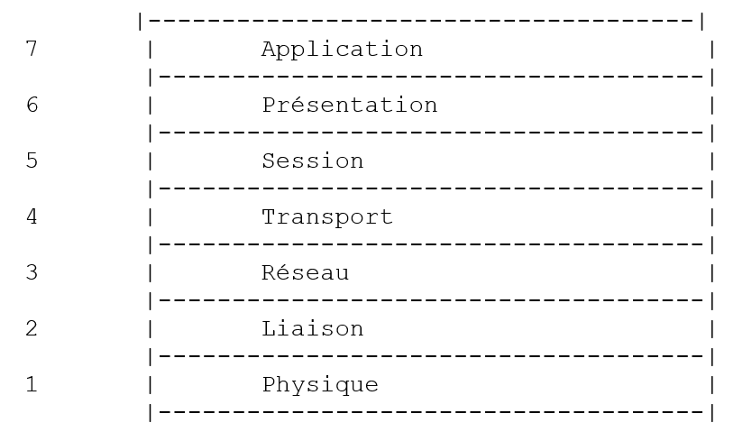
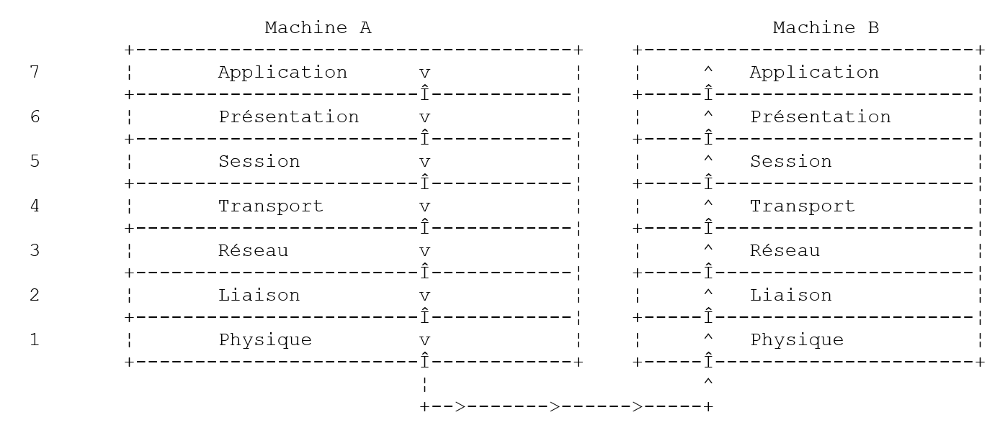
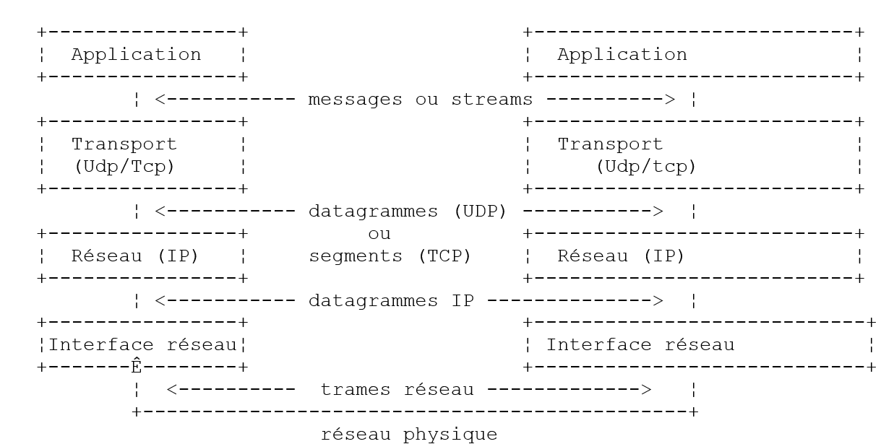
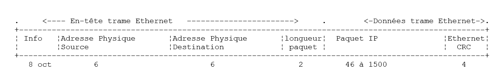
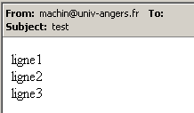

8. برمجة TCP-IP
8.1. معلومات عامة
8.1.1. بروتوكولات الإنترنت
نقدم هنا مقدمة لبروتوكولات الاتصال على الإنترنت، والتي تُعرف أيضًا باسم مجموعة بروتوكولات TCP/IP (بروتوكول التحكم في النقل / بروتوكول الإنترنت)، نسبةً إلى اسمي البروتوكولين الرئيسيين. من المستحسن أن يكون لدى القارئ فهم شامل لكيفية عمل الشبكات، ولا سيما بروتوكولات TCP/IP قبل الشروع في بناء التطبيقات الموزعة.
النص التالي هو ترجمة جزئية لنص موجود في وثيقة "Lan Workplace for Dos - Administrator's Guide" من NOVELL، وهي وثيقة تعود إلى أوائل التسعينيات.
يأتي المفهوم العام لإنشاء شبكة من أجهزة الكمبيوتر غير المتجانسة من الأبحاث التي أجرتها وكالة DARPA (وكالة مشاريع الأبحاث المتقدمة للدفاع) في الولايات المتحدة. طورت DARPA مجموعة البروتوكولات المعروفة باسم TCP/IP التي تسمح للأجهزة غير المتجانسة بالتواصل فيما بينها. تم اختبار هذه البروتوكولات على شبكة تسمى ARPAnet، وهي الشبكة التي أصبحت لاحقًا شبكة INTERNET. تحدد بروتوكولات TCP/IP تنسيقات وقواعد الإرسال والاستقبال المستقلة عن تنظيم الشبكات والمعدات المستخدمة.
الشبكة التي صممها DARPA وتديرها بروتوكولات TCP/IP هي شبكة تبديل حزم. تقوم هذه الشبكة بنقل المعلومات عبر الشبكة على شكل أجزاء صغيرة تسمى الحزم. وبالتالي، إذا قام جهاز كمبيوتر بإرسال ملف كبير، فسيتم تقسيمه إلى أجزاء صغيرة يتم إرسالها عبر الشبكة ليتم إعادة تجميعها عند الوصول إلى الوجهة. يحدد TCP/IP تنسيق هذه الحزم، أي:
- منشأ الحزمة
- الوجهة
- الطول
- النوع
8.1.2. نموذج OSI
تتبع بروتوكولات TCP/IP تقريبًا نموذج الشبكة المفتوحة المسمى OSI (نموذج مرجعي لترابط الأنظمة المفتوحة) الذي حددته ISO (منظمة المعايير الدولية). يصف هذا النموذج شبكة مثالية حيث يمكن تمثيل الاتصال بين الأجهزة بنموذج مكون من سبع طبقات:

تتلقى كل طبقة الخدمات من الطبقة السفلية وتقدم خدماتها إلى الطبقة العليا. لنفترض أن تطبيقين موجودين على جهازين مختلفين A و B يرغبان في التواصل: فهما يفعلان ذلك على مستوى الطبقة Application. ولا يحتاجان إلى معرفة كل تفاصيل عمل الشبكة: فكل تطبيق يمرر المعلومات التي يرغب في إرسالها إلى الطبقة التي تليه: الطبقة Présentation. وبالتالي، لا يحتاج التطبيق سوى إلى معرفة قواعد التفاعل مع الطبقة Présentation.
بمجرد وصول المعلومات إلى الطبقة Présentation، تنتقل وفقًا لقواعد أخرى إلى الطبقة Session وهكذا دواليك، حتى تصل المعلومات إلى الوسيط المادي وتُنقل فعليًّا إلى الجهاز المقصود. وهناك، ستخضع للمعالجة العكسية لتلك التي خضعت لها على الجهاز المرسل.
في كل طبقة، تقوم العملية المرسلة المكلفة بإرسال المعلومات بإرسالها إلى عملية مستقبلة على الجهاز الآخر الذي ينتمي إلى نفس الطبقة. وتقوم بذلك وفقًا لقواعد معينة تسمى بروتوكول الطبقة. وبالتالي، يكون مخطط الاتصال النهائي كما يلي:

دور الطبقات المختلفة هو كما يلي:
تضمن نقل البتات عبر وسيط مادي. يوجد في هذه الطبقة معدات طرفية لمعالجة البيانات (E.T.T.D.) مثل المحطة الطرفية أو الكمبيوتر، بالإضافة إلى معدات إنهاء دوائر البيانات (E.T.C.D.) مثل المُعدِّل/المُفكِّك، والمُضاعِف، والمُركِّز. النقاط المهمة في هذا المستوى هي: . اختيار ترميز المعلومات (تناظري أو رقمي) . اختيار طريقة الإرسال (متزامن أو غير متزامن). | |
يخفي الخصائص الفيزيائية للطبقة الفيزيائية. يكتشف أخطاء الإرسال ويصححها. | |
يدير المسار الذي يجب أن تتبعه المعلومات المرسلة عبر الشبكة. ويُطلق على ذلك اسم routage: تحديد المسار الذي يجب أن تتبعه المعلومات حتى تصل إلى مستلمها. | |
يسمح بالاتصال بين تطبيقين في حين أن الطبقات السابقة كانت تسمح فقط بالاتصال بين الأجهزة. قد تكون إحدى الخدمات التي توفرها هذه الطبقة هي التعدد: يمكن لطبقة النقل استخدام نفس اتصال الشبكة (من جهاز إلى جهاز) لنقل المعلومات الخاصة بعدة تطبيقات. | |
نجد في هذه الطبقة خدمات تسمح لتطبيق ما بفتح جلسة عمل والحفاظ عليها على جهاز بعيد. | |
وتهدف هذه الطبقة إلى توحيد عرض البيانات على الأجهزة المختلفة. وبالتالي، فإن البيانات الواردة من جهاز A سيتم "تغليفها" بواسطة طبقة Présentation الخاصة بجهاز A، وفقًا لتنسيق قياسي قبل إرسالها عبر الشبكة. وعند وصولها إلى الطبقة Présentation للجهاز المستلم B الذي سيتعرف عليها بفضل تنسيقها القياسي، سيتم تزيينها بطريقة أخرى حتى يتعرف عليها تطبيق الجهاز B. | |
في هذه المرحلة، نجد التطبيقات التي عادةً ما تكون قريبة من المستخدم مثل البريد الإلكتروني أو نقل الملفات. |
8.1.3. النموذج TCP/IP
النموذج OSI هو نموذج مثالي لم يتم تنفيذه بعد. تقترب مجموعة البروتوكولات TCP/IP منه بالشكل التالي:

الطبقة المادية
في الشبكة المحلية، نجد عادةً تقنية إيثرنت أو توكن رينغ. ونحن نقدم هنا تقنية إيثرنت فقط.
إيثرنت
هذا هو الاسم الذي أُطلق على تقنية الشبكات المحلية ذات التبديل الحزمي التي اخترعتها شركة Xerox في أوائل السبعينيات وقامت شركات Xerox وIntel وDigital Equipment بتوحيدها في عام 1978. تتكون الشبكة ماديًا من كابل متحد المحور يبلغ قطره حوالي 1.27 سم وطوله 500 متر كحد أقصى. ويمكن تمديدها باستخدام répéteurs، بحيث لا يمكن أن يفصل بين جهازين أكثر من مكررين. الكابل سلبي: جميع العناصر النشطة موجودة على الأجهزة المتصلة بالكابل. يتم توصيل كل جهاز بالكابل عن طريق بطاقة وصول إلى الشبكة تتضمن:
- جهاز إرسال (transceiver) يكتشف وجود إشارات على الكابل ويحول الإشارات التناظرية إلى إشارات رقمية والعكس.
- مقرن يستقبل الإشارات الرقمية من جهاز الإرسال وينقلها إلى الكمبيوتر للمعالجة أو العكس.
الخصائص الرئيسية لتقنية إيثرنت هي كما يلي:
- سعة 10 ميجابت/ثانية.
- توبولوجيا الحافلة: جميع الأجهزة متصلة بنفس الكابل

- شبكة البث - تقوم الجهاز المرسل بنقل المعلومات عبر الكابل مع عنوان الجهاز المستلم. ثم تستقبل جميع الأجهزة المتصلة هذه المعلومات، ولا يحتفظ بها سوى الجهاز المرسلة إليه.
- طريقة الوصول هي كما يلي: يستمع جهاز الإرسال الراغب في الإرسال إلى الكابل - ثم يكتشف وجود موجة حاملة أم لا، حيث يعني وجودها أن عملية إرسال جارية. هذه هي تقنية CSMA (Carrier Sense Multiple Access). في حالة عدم وجود موجة حاملة، يمكن لجهاز الإرسال أن يقرر الإرسال بدوره. وقد يتخذ عدة أجهزة هذا القرار. تتداخل الإشارات المرسلة: ويُقال إن هناك تضاربًا. يكتشف جهاز الإرسال هذه الحالة: ففي الوقت الذي يبث فيه عبر الكابل، يستمع إلى ما يمر فعليًا عبره. وإذا اكتشف أن المعلومات التي تمر عبر الكابل ليست هي التي أرسلها، يستنتج أن هناك تصادمًا ويتوقف عن الإرسال. وستفعل أجهزة الإرسال الأخرى التي كانت تبث الشيء نفسه. سيستأنف كل جهاز إرساله بعد فترة عشوائية تعتمد على كل جهاز إرسال. تسمى هذه التقنية CD (Collision Detect). وبالتالي، تسمى طريقة الوصول CSMA/CD.
- عنونة 48 بت. لكل جهاز عنوان، يُسمى هنا العنوان المادي، وهو مكتوب على البطاقة التي تربطه بالكابل. يُطلق على هذا العنوان اسم عنوان الجهاز Ethernet.
طبقة الشبكة
نجد في هذه الطبقة البروتوكولات IP و ICMP و ARP و RARP.
IP (بروتوكول الإنترنت) | ينقل الحزم بين عقدتين في الشبكة |
ICMP (بروتوكول رسائل التحكم في الإنترنت) | يقوم ICMP بالاتصال بين برنامج بروتوكول IP في جهاز ما وبرنامج جهاز آخر. وهو بالتالي بروتوكول لتبادل الرسائل داخل بروتوكول IP نفسه. |
ARP (بروتوكول تحليل العناوين) | يقوم بمطابقة عنوان الإنترنت الخاص بالجهاز مع العنوان الفعلي للجهاز |
RARP (بروتوكول تحليل العناوين العكسي) | يقوم بمطابقة العنوان الفعلي للجهاز مع عنوان الإنترنت الخاص بالجهاز |
طبقات النقل/الجلسة
في هذه الطبقة، نجد البروتوكولات التالية:
TCP (بروتوكول التحكم في الإرسال) | يضمن تسليم المعلومات بشكل موثوق بين عميلين |
UDP (بروتوكول مخطط بيانات المستخدم) | يضمن نقل المعلومات بشكل غير موثوق بين عميلين |
طبقات التطبيق/العرض/الجلسة
توجد هنا بروتوكولات متنوعة:
محاكي طرفي يسمح لجهاز A بالاتصال بجهاز B كطرفي | |
يسمح بنقل الملفات | |
يسمح بنقل الملفات | |
يسمح بتبادل الرسائل بين مستخدمي الشبكة | |
يحول اسم الجهاز إلى عنوان الإنترنت الخاص بالجهاز | |
تم إنشاؤه بواسطة sun MicroSystems، ويحدد تمثيلًا قياسيًا للبيانات، مستقلًا عن الأجهزة | |
تم تعريفه أيضًا بواسطة Sun، وهو بروتوكول اتصال بين التطبيقات البعيدة، مستقل عن طبقة النقل. هذا البروتوكول مهم: فهو يعفي المبرمج من معرفة تفاصيل طبقة النقل ويجعل التطبيقات قابلة للنقل. يعتمد هذا البروتوكول على بروتوكول XDR | |
الذي حددته شركة Sun أيضًا، ويتيح هذا البروتوكول لجهاز ما "رؤية" نظام الملفات الخاص بجهاز آخر. وهو يعتمد على البروتوكول RPC السابق |
8.1.4. كيفية عمل بروتوكولات الإنترنت
تستخدم التطبيقات المطورة في بيئة TCP/IP عادةً العديد من بروتوكولات هذه البيئة. يتواصل برنامج التطبيق مع الطبقة العليا من البروتوكولات. تنقل هذه الطبقة المعلومات إلى الطبقة السفلية وهكذا دواليك حتى تصل إلى الوسيط المادي. وهناك، يتم نقل المعلومات فعليًا إلى الجهاز المستلم حيث تعبر الطبقات نفسها مرة أخرى، ولكن في الاتجاه المعاكس هذه المرة، حتى تصل إلى التطبيق المستلم للمعلومات المرسلة. يوضح الرسم البياني التالي مسار المعلومات:

لنأخذ مثالاً: التطبيق FTP، المحدد على مستوى الطبقة Application والذي يسمح بنقل الملفات بين الأجهزة.
- تقوم التطبيق بتسليم سلسلة من البايتات لنقلها إلى الطبقة transport.
- يقوم الطبقة transport بتقسيم سلسلة البايتات هذه إلى segments و TCP، ويضيف رقم كل مقطع في بداية كل مقطع. يتم تمرير المقاطع إلى طبقة الشبكة التي يحكمها بروتوكول IP.
- تقوم طبقة IP بإنشاء حزمة تغلف المقطع TCP المستلم. في مقدمة هذه الحزمة، تضع عناوين الإنترنت لأجهزة المصدر والوجهة. كما تحدد العنوان الفعلي لجهاز الوجهة. يتم تمرير كل ذلك إلى طبقة ربط البيانات والربط الفعلي، أي إلى بطاقة الشبكة التي تربط الجهاز بالشبكة الفعلية.
- وهناك، يتم تغليف الحزمة IP بدورها في إطار مادي وإرسالها إلى المستلم عبر الكابل.
- على الجهاز المستلم، تقوم طبقة ربط البيانات والربط المادي بالعكس: فهي تفك تغليف الحزمة IP من الإطار المادي وتمررها إلى الطبقة IP.
- تتحقق الطبقة IP من صحة الحزمة: فهي تحسب مجموعًا، بناءً على البتات المستلمة (checksum)، وهو المجموع الذي يجب أن تجده في رأس الحزمة. إذا لم يكن الأمر كذلك، يتم رفض الحزمة.
- إذا تم إعلان صحة الحزمة، تقوم الطبقة IP بفك تغليف المقطع TCP الموجود فيها وتمريره إلى الطبقة transport.
- تقوم الطبقة transport، وهي الطبقة TCP في مثالنا، بفحص رقم المقطع من أجل إعادة ترتيب المقاطع بالترتيب الصحيح.
- كما أنها تحسب مجموع التحقق للقطعة TCP. إذا تم العثور عليه صحيحًا، فإن الطبقة TCP ترسل إشعارًا بالاستلام إلى الجهاز المصدر، وإلا يتم رفض القطعة TCP.
- ولم يتبق للطبقة TCP سوى نقل جزء البيانات من المقطع إلى التطبيق المستلم لها في الطبقة الأعلى.
8.1.5. مشاكل العنونة في الإنترنت
يمكن أن يكون noeud في شبكة ما جهاز كمبيوتر أو طابعة ذكية أو خادم ملفات، أو أي شيء في الواقع يمكنه الاتصال باستخدام بروتوكولات TCP/IP. لكل عقدة عنوان مادي بتنسيق يعتمد على نوع الشبكة. في شبكة إيثرنت، يتم ترميز العنوان المادي على 6 بايت. عنوان شبكة X25 هو رقم مكون من 14 رقمًا.
عنوان الإنترنت الخاص بالعقدة هو عنوان منطقي: فهو مستقل عن الأجهزة والشبكة المستخدمة. وهو عنوان مكون من 4 بايتات يحدد في آن واحد شبكة محلية وعقدة في هذه الشبكة. عادةً ما يتم تمثيل عنوان الإنترنت في شكل 4 أرقام، وهي قيم البايتات الأربعة، مفصولة بنقطة. وبالتالي، فإن عنوان جهاز Lagaffe في كلية العلوم في أنجيه هو 193.49.144.1، وعنوان جهاز Liny هو 193.49.144.9. ومن ذلك نستنتج أن عنوان الإنترنت للشبكة المحلية هو 193.49.144.0. ويمكن أن تضم هذه الشبكة ما يصل إلى 254 عقدة.
ونظرًا لأن عناوين الإنترنت أو عناوين IP مستقلة عن الشبكة، يمكن لجهاز في شبكة A التواصل مع جهاز في شبكة B دون الاهتمام بنوع الشبكة التي يوجد عليها: يكفي أن يعرف عنوانه IP. يتولى بروتوكول IP لكل شبكة إجراء التحويل بين عنوان IP والعنوان الفعلي، في كلا الاتجاهين.
يجب أن تكون عناوين IP مختلفة جميعها. وتقوم هيئات رسمية بتوزيعها. في الواقع، تمنح هذه الهيئات عنوانًا للشبكات المحلية، على سبيل المثال 193.49.144.0 لشبكة كلية العلوم في أنجيه. يمكن لمسؤول هذه الشبكة بعد ذلك تخصيص عناوين IP من 193.49.144.1 إلى 193.49.144.254 كما يشاء. عادةً ما يتم تسجيل هذا العنوان في ملف خاص بكل جهاز متصل بالشبكة.
8.1.5.1. فئات العناوين IP
عنوان IP هو سلسلة من 4 بايت تُكتب غالبًا على النحو التالي: I1.I2.I3.I4، والتي تحتوي في الواقع على عنوانين:
- عنوان الشبكة
- عنوان عقدة في هذه الشبكة
وفقًا لحجم هذين الحقلين، تنقسم عناوين IP إلى 3 فئات: الفئات A و B و C.
الفئة A
العنوان IP: I1.I2.I3.I4 له الشكل R1.N1.N2.N3 حيث
R1 هو عنوان الشبكة
N1.N2.N3 هو عنوان جهاز في هذه الشبكة
وبشكل أكثر دقة، فإن شكل عنوان IP من الفئة A هو كما يلي:

يتكون عنوان الشبكة من 7 بتات وعنوان العقدة من 24 بتة. وبالتالي، يمكن أن يكون هناك 127 شبكة من الفئة A، تحتوي كل منها على ما يصل إلى 224 عقدة.
الفئة B
هنا، العنوان IP: I1.I2.I3.I4 له الشكل R1.R2.N1.N2 حيث
R1.R2 هي عنوان الشبكة
N1.N2 هو عنوان جهاز في هذه الشبكة
وبشكل أكثر دقة، فإن شكل عنوان IP من الفئة B هو كما يلي:

يتكون عنوان الشبكة من 2 بايت (14 بت بالضبط) وكذلك عنوان العقدة. وبالتالي، يمكن أن يكون هناك 214 شبكة من الفئة B تحتوي كل منها على ما يصل إلى 216 عقدة.
الفئة C
في هذه الفئة، يكون العنوان IP: I1.I2.I3.I4 بالشكل R1.R2.R3.N1 حيث
R1.R2.R3 هي عنوان الشبكة
N1 هو عنوان جهاز في هذه الشبكة
وبشكل أكثر دقة، فإن شكل عنوان IP من الفئة C هو كما يلي:

يتكون عنوان الشبكة من 3 بايت (ناقص 3 بت) وعنوان العقدة من 1 بايت. وبالتالي، يمكن أن يكون هناك 221 شبكة من الفئة C تضم ما يصل إلى 256 عقدة.
بما أن عنوان الجهاز Lagaffe التابع لكلية العلوم في أنجيه هو 193.49.144.1، نرى أن البايت الأعلى قيمة يساوي 193، أي 11000001 بالثنائي. نستنتج من ذلك أن الشبكة من الفئة C.
العناوين المحجوزة
. بعض عناوين IP هي عناوين شبكات وليست عناوين عقد في الشبكة. وهي تلك التي يتم فيها تعيين عنوان العقدة على 0. وبالتالي، فإن العنوان 193.49.144.0 هو عنوان IP لشبكة كلية العلوم في أنجيه. ونتيجة لذلك، لا يمكن لأي عقدة في الشبكة أن يكون لها عنوان صفر.
. عندما لا تحتوي عنوان العقدة في عنوان IP إلا على أرقام 1، يكون لدينا عنوان بث: يشير هذا العنوان إلى جميع العقد في الشبكة.
. في شبكة من الفئة C، التي تسمح نظريًا بـ 28=256 عقدة، إذا أزلنا العنوانين المحظورين، فلن يتبقى سوى 254 عنوانًا مسموحًا به.
8.1.5.2. بروتوكولات التحويل بين عنوان الإنترنت <--> العنوان الفعلي
لقد رأينا أنه عند إرسال المعلومات من جهاز إلى آخر، يتم تغليف هذه المعلومات في حزم عند عبورها الطبقة IP. وتكون هذه الحزم بالشكل التالي:

وبالتالي، تحتوي الحزمة IP على عناوين الإنترنت للجهازين المصدر والوجهة. وعندما يتم إرسال هذه الحزمة إلى الطبقة المسؤولة عن إرسالها عبر الشبكة المادية، تُضاف إليها معلومات أخرى لتشكيل الإطار المادي الذي سيتم إرساله في النهاية عبر الشبكة. على سبيل المثال، يكون تنسيق الإطار على شبكة إيثرنت كما يلي:

في الإطار النهائي، يوجد العنوان المادي للجهازين المرسل والمرسل إليه. كيف يتم الحصول عليهما؟
تتعرف الجهاز المرسل على عنوان IP للجهاز الذي يريد التواصل معه، ويحصل على العنوان المادي لهذا الجهاز باستخدام بروتوكول خاص يسمى ARP (بروتوكول تحليل العناوين).
- ترسل حزمة من نوع خاص تسمى حزمة ARP تحتوي على العنوان IP للجهاز الذي نبحث عن عنوانه الفعلي. كما حرصت على وضع عنوانها الخاص IP وعنوانها الفعلي فيها.
- يتم إرسال هذه الحزمة إلى جميع العقد في الشبكة.
- وتتعرف هذه العقد على الطبيعة الخاصة للحزمة. وتقوم العقدة التي تتعرف على عنوانها IP في الحزمة بالرد عن طريق إرسال عنوانها الفعلي إلى مرسل الحزمة. كيف يمكنها ذلك؟ لقد عثرت في الحزمة على العناوين IP والعنوان الفعلي للمرسل.
- وبالتالي، يتلقى المرسل العنوان الفعلي الذي كان يبحث عنه. ويخزنه في الذاكرة ليتمكن من استخدامه لاحقًا في حالة إرسال حزم أخرى إلى نفس المستلم.
عادةً ما يتم تسجيل عنوان IP الخاص بجهاز ما في أحد ملفاته، وبالتالي يمكنه الرجوع إليه لمعرفة هذا العنوان. يمكن تغيير هذا العنوان: يكفي تعديل الملف. أما العنوان الفعلي، فهو مسجل في ذاكرة بطاقة الشبكة ولا يمكن تغييره.
عندما يرغب المسؤول في تنظيم شبكته بطريقة مختلفة، قد يضطر إلى تغيير عناوين IP لجميع العقد، وبالتالي تحرير ملفات التكوين المختلفة للعقد المختلفة. قد يكون هذا مملًا ومصدرًا للأخطاء إذا كان هناك عدد كبير من الأجهزة. تتمثل إحدى الطرق في عدم تخصيص عنوان IP للأجهزة: حيث يتم إدخال رمز خاص في الملف الذي من المفترض أن تجد فيه الجهاز عنوانها IP. وعندما تكتشف الجهاز أنه ليس لديه عنوان IP، فإنه يطلبه وفقًا لبروتوكول يسمى RARP (بروتوكول تحليل العناوين العكسي). ثم ترسل عبر الشبكة حزمة خاصة تسمى حزمة RARP، مشابهة للحزمة السابقة ARP، تضع فيها عنوانها الفعلي. يتم إرسال هذه الحزمة إلى جميع العقد التي تتعرف عندئذٍ على حزمة RARP. أحدها، يُسمى الخادم RARP، يمتلك ملفًا يحدد التوافق بين العنوان الفعلي <--> عنوان IP لجميع العقد. ثم يرد على مرسل الحزمة RARP، بإعادة إرسال عنوانه IP إليه. وبالتالي، فإن أي مسؤول يرغب في إعادة تكوين شبكته، ما عليه سوى تعديل ملف التوافق الخاص بالخادم RARP. ويجب أن يكون لهذا الملف عادةً عنوان ثابت IP يجب أن يكون قادراً على معرفته دون الحاجة إلى استخدام بروتوكول RARP بنفسه.
8.1.6. طبقة الشبكة المعروفة باسم طبقة IP للإنترنت
يحدد بروتوكول IP (بروتوكول الإنترنت) الشكل الذي يجب أن تتخذه الحزم والطريقة التي يجب أن تدار بها عند إرسالها أو استلامها. يُطلق على هذا النوع الخاص من الحزم اسم "داتاغرام" IP. وقد قدمناها سابقًا:

المهم هو أنه بالإضافة إلى البيانات المراد إرسالها، تحتوي حزمة البيانات IP على عناوين الإنترنت للجهاز المرسل والجهاز المستقبل. وبذلك يعرف الجهاز المستقبل من الذي يرسل له الرسالة.
وعلى عكس إطار الشبكة الذي يحدد طوله وفقًا للخصائص الفيزيائية للشبكة التي يمر عبرها، فإن طول حزمة البيانات IP يحدده البرنامج، وبالتالي سيكون هو نفسه على شبكات فيزيائية مختلفة. لقد رأينا أنه عند النزول من طبقة الشبكة إلى الطبقة المادية، تم تغليف حزمة البيانات IP في إطار مادي. وقد قدمنا مثالاً على الإطار المادي لشبكة إيثرنت:

تنتقل الإطارات المادية من عقدة إلى أخرى نحو وجهتها التي قد لا تكون على نفس الشبكة المادية التي توجد عليها الآلة المرسلة. وبالتالي، يمكن تغليف الحزمة IP تباعًا في إطارات مادية مختلفة على مستوى العقد التي تربط بين شبكتين من نوعين مختلفين. وقد تكون الحزمة IP كبيرة جدًا بحيث لا يمكن تغليفها في إطار مادي. يقوم برنامج IP الخاص بالعقدة التي تحدث فيها هذه المشكلة بتقسيم الحزمة IP إلى fragments وفقًا لقواعد محددة، ثم يتم إرسال كل منها على الشبكة المادية. ولن يتم إعادة تجميعها إلا عند وصولها إلى وجهتها النهائية.
8.1.6.1. التوجيه
التوجيه هو طريقة توجيه الحزم IP إلى وجهتها. هناك طريقتان: التوجيه المباشر والتوجيه غير المباشر.
التوجيه المباشر
يشير التوجيه المباشر إلى توجيه حزمة IP مباشرة من المرسل إلى المستلم داخل نفس الشبكة:
- الجهاز المرسل لحزمة بيانات IP لديه عنوان IP الخاص بالمستلم.
- وهي تحصل على العنوان الفعلي لهذا الأخير عن طريق بروتوكول ARP أو من جداولها، إذا كان هذا العنوان قد تم الحصول عليه مسبقًا.
- وترسل الحزمة عبر الشبكة إلى هذا العنوان الفعلي.
التوجيه غير المباشر
يشير التوجيه غير المباشر إلى توجيه حزمة IP إلى وجهة تقع على شبكة أخرى غير تلك التي ينتمي إليها المرسل. في هذه الحالة، تختلف أجزاء عناوين الشبكة في عناوين IP لكل من الجهاز المرسل والجهاز المستقبل. يدرك الجهاز المرسل هذه الحقيقة. ثم ترسل الحزمة إلى عقدة خاصة تسمى جهاز التوجيه (router)، وهي عقدة تربط شبكة محلية بشبكات أخرى وتجد عنوانها IP في جداولها، وهو عنوان تم الحصول عليه في البداية إما من ملف أو من ذاكرة دائمة أو حتى عبر معلومات متداولة على الشبكة.
يتم توصيل جهاز التوجيه بشبكتين وله عنوان IP داخل هاتين الشبكتين.

في المثال أعلاه:
- الشبكة رقم 1 لها عنوان الإنترنت 193.49.144.0 والشبكة رقم 2 لها العنوان 193.49.145.0.
- داخل الشبكة رقم 1، يمتلك جهاز التوجيه العنوان 193.49.144.6 والعنوان 193.49.145.3 داخل الشبكة رقم 2.
تتمثل مهمة جهاز التوجيه في تحويل الحزمة IP التي يتلقاها، والموجودة في إطار مادي نموذجي للشبكة رقم 1، إلى إطار مادي يمكن أن ينتقل عبر الشبكة رقم 2. إذا كان عنوان IP الخاص بمستلم الحزمة موجودًا في الشبكة رقم 2، فسيرسل الموجه الحزمة إليه مباشرةً، وإلا فسيرسلها إلى موجه آخر، يربط الشبكة رقم 2 بشبكة رقم 3 وهكذا دواليك.
8.1.6.2. رسائل الخطأ والتحكم
يوجد أيضًا في طبقة الشبكة، أي على نفس مستوى بروتوكول IP، بروتوكول ICMP (بروتوكول رسائل التحكم في الإنترنت). ويستخدم هذا البروتوكول لإرسال رسائل حول التشغيل الداخلي للشبكة: العقد المعطلة، الازدحام عند أحد أجهزة التوجيه، إلخ... يتم تغليف رسائل ICMP في حزم IP وإرسالها عبر الشبكة. تتخذ طبقات IP في العقد المختلفة الإجراءات المناسبة وفقًا لرسائل ICMP التي تتلقاها. وبالتالي، لا يرى التطبيق نفسه أبدًا هذه المشكلات الخاصة بالشبكة.
ستستخدم العقدة المعلومات ICMP لتحديث جداول التوجيه الخاصة بها.
8.1.7. طبقة النقل: بروتوكولا UDP و TCP
8.1.7.1. بروتوكول UDP: بروتوكول مخطط بيانات المستخدم
يسمح بروتوكول UDP بتبادل غير موثوق للبيانات بين نقطتين، أي أن التوجيه الصحيح لحزمة إلى وجهتها غير مضمون. يمكن للتطبيق، إذا رغب في ذلك، إدارة هذا الأمر بنفسه، على سبيل المثال بالانتظار بعد إرسال رسالة، لإيصال استلام، قبل إرسال الرسالة التالية.
في الوقت الحالي، على مستوى الشبكة، تحدثنا عن عناوين IP للأجهزة. ولكن على جهاز واحد، يمكن أن تتعايش في نفس الوقت عمليات مختلفة يمكنها جميعًا التواصل. لذلك، عند إرسال رسالة، يجب الإشارة ليس فقط إلى عنوان الجهاز المستلم IP، بل أيضًا إلى "اسم" العملية المستلمة. هذا الاسم هو في الواقع رقم يُسمى رقم المنفذ. بعض الأرقام محجوزة للتطبيقات القياسية: المنفذ 69 لتطبيق tftp (بروتوكول نقل الملفات البسيط) على سبيل المثال.
تُسمى الحزم التي يديرها بروتوكول UDP أيضًا داتاغرامات. وهي تأخذ الشكل التالي:

سيتم تغليف هذه الداتاغرامات في حزم IP، ثم في إطارات مادية.
8.1.7.2. بروتوكول TCP: بروتوكول التحكم في النقل
لضمان أمان الاتصالات، لا يكفي بروتوكول UDP: يجب على مطور التطبيقات أن يضع بنفسه بروتوكولًا يسمح له بالتأكد من توجيه الحزم بشكل صحيح.
يمنع بروتوكول TCP (بروتوكول التحكم في النقل) حدوث هذه المشاكل. وتتمثل خصائصه فيما يلي:
- تقوم العملية التي ترغب في الإرسال أولاً بإنشاء اتصال مع العملية المستلمة للمعلومات التي سترسلها. يتم هذا الاتصال بين منفذ في الجهاز المرسل ومنفذ في الجهاز المستقبل. يتم إنشاء مسار افتراضي بين المنفذين، ويكون مخصصاً فقط للعمليتين اللتين قامتا بإجراء الاتصال.
- تتبع جميع الحزم المرسلة من العملية المصدر هذا المسار الافتراضي وتصل بالترتيب الذي تم إرسالها به، وهو ما لم يكن مضمونًا في بروتوكول UDP حيث كان من الممكن أن تتبع الحزم مسارات مختلفة.
- تتميز المعلومات المرسلة بطابعها المستمر. ترسل العملية المرسلة المعلومات وفقًا لوتيرتها الخاصة. ولا يتم إرسال هذه المعلومات بالضرورة على الفور: ينتظر بروتوكول TCP حتى يتوفر لديه ما يكفي لإرسالها. يتم تخزينها في بنية تسمى المقطع TCP. وبمجرد ملء هذا المقطع، سيتم إرساله إلى الطبقة IP حيث سيتم تغليفه في حزمة IP.
- يتم ترقيم كل مقطع يتم إرساله بواسطة بروتوكول TCP. يتحقق بروتوكول TCP المستلم من استلامه للمقاطع بالترتيب الصحيح. لكل مقطع يتم استلامه بشكل صحيح، يرسل إشعارًا بالاستلام إلى المرسل.
- وعندما يتلقى المرسل هذا الإقرار، يقوم بإبلاغ العملية المرسلة بذلك. وبالتالي، يمكن لهذه العملية أن تعرف أن المقطع قد وصل إلى وجهته، وهو ما لم يكن ممكنًا مع بروتوكول UDP.
- إذا لم يتلق بروتوكول TCP، الذي أرسل مقطعًا، إشعارًا بالاستلام بعد مرور فترة معينة، فإنه يعيد إرسال المقطع المعني، مما يضمن جودة خدمة توصيل المعلومات.
- الدائرة الافتراضية التي تم إنشاؤها بين العمليتين المتواصلتين هي full-duplex: وهذا يعني أن المعلومات يمكن أن تنتقل في كلا الاتجاهين. وبالتالي، يمكن للعملية الوجهة إرسال إقرارات الاستلام حتى في الوقت الذي تواصل فيه العملية المصدر إرسال المعلومات. وهذا يسمح، على سبيل المثال، لبروتوكول المصدر TCP بإرسال عدة مقاطع دون انتظار إشعار بالاستلام. وإذا أدرك بعد فترة معينة أنه لم يتلق إشعارًا بالاستلام لمقطع معين رقم n، فسيستأنف إرسال المقاطع من هذه النقطة.
8.1.8. طبقة التطبيقات
فوق البروتوكولات UDP و TCP، توجد بروتوكولات قياسية متنوعة:
TELNET
يتيح هذا البروتوكول لمستخدم جهاز A في الشبكة الاتصال بجهاز B (يُسمى غالبًا الجهاز المضيف). يقوم TELNET بمحاكاة ما يُسمى محطة طرفية عالمية على الجهاز A. وبالتالي، يتصرف المستخدم كما لو كان لديه محطة طرفية متصلة بالجهاز B. يعتمد Telnet على بروتوكول TCP.
FTP: (بروتوكول نقل الملفات)
يسمح هذا البروتوكول بتبادل الملفات بين جهازين بعيدين وكذلك بإجراء عمليات على الملفات مثل إنشاء مجلدات على سبيل المثال. وهو يعتمد على بروتوكول TCP.
TFTP: (التحكم في نقل الملفات البسيط)
هذا البروتوكول هو نسخة معدلة من FTP. وهو يعتمد على بروتوكول UDP وهو أقل تطوراً من FTP.
DNS: (نظام أسماء النطاقات)
عندما يرغب مستخدم في تبادل الملفات مع جهاز بعيد، عبر FTP على سبيل المثال، يجب أن يعرف عنوان الإنترنت لهذا الجهاز. على سبيل المثال، لإجراء FTP على الجهاز Lagaffe بجامعة أنجيه، يجب تشغيل FTP على النحو التالي: FTP 193.49.144.1
وهذا يتطلب وجود دليل يربط بين الجهاز <--> عنوان IP. ومن المحتمل أن يتم تعيين الأجهزة في هذا الدليل بأسماء رمزية مثل:
الجهاز DPX2/320 التابع لجامعة أنجيه
جهاز Sun التابع لجامعة أنجيه ISERPA
من الواضح أنه سيكون من الأفضل تسمية الجهاز باسم بدلاً من عنوانه IP. وهنا يطرح مشكل تفرد الاسم: فهناك ملايين الأجهزة المتصلة ببعضها البعض. يمكننا أن نتصور أن تقوم هيئة مركزية بتخصيص الأسماء. لكن هذا سيكون بلا شك أمراً مرهقاً. وقد تم توزيع مراقبة الأسماء في الواقع على نطاقات. يتم إدارة كل مجال من قبل هيئة عادة ما تكون صغيرة الحجم وتتمتع بحرية تامة في اختيار أسماء الأجهزة. وهكذا، تنتمي الأجهزة في فرنسا إلى المجال fr، وهو مجال تديره مؤسسة Inria في باريس. ولتبسيط الأمور أكثر، يتم توزيع الإشراف مرة أخرى: يتم إنشاء مجالات داخل المجال fr. وهكذا، تنتمي جامعة أنجيه إلى المجال univ-Angers. يتمتع القسم الذي يدير هذا المجال بحرية تامة في تسمية أجهزة شبكة جامعة أنجيه. في الوقت الحالي، لم يتم تقسيم هذا المجال. ولكن في جامعة كبيرة تضم العديد من الأجهزة المتصلة بالشبكة، قد يتم تقسيمه.
تم تسمية الجهاز DPX2/320 التابعة لجامعة أنجيه تم تسميتها Lagaffe، في حين تم تسمية PC و486DX50 باسم liny. كيف يمكن الإشارة إلى هذه الأجهزة من الخارج؟ من خلال تحديد التسلسل الهرمي للمجالات التي تنتمي إليها. وبالتالي، سيكون الاسم الكامل لجهاز Lagaffe هو:
داخل المجالات، يمكن استخدام أسماء نسبية. وبالتالي، داخل المجال fr وخارج المجال univ-Angers، يمكن الإشارة إلى الجهاز Lagaffe بـ
وأخيرًا، داخل المجال univ-Angers، يمكن الإشارة إليها ببساطة بـ
وبالتالي، يمكن لأي تطبيق الإشارة إلى جهاز ما باسمه. ولكن في النهاية، لا بد من الحصول على عنوان الإنترنت الخاص بهذا الجهاز. كيف يتم ذلك؟ لنفترض أننا نريد من جهاز A التواصل مع جهاز B.
- إذا كانت الجهاز B تنتمي إلى نفس المجال الذي تنتمي إليه الجهاز A، فمن المحتمل أن نجد عنوانها IP في ملف على الجهاز A.
- وإلا، فستجد الجهاز A في ملف آخر أو في نفس الملف السابق قائمة ببعض خوادم الأسماء مع عناوينها IP. يتولى خادم الأسماء مهمة الربط بين اسم الجهاز وعنوانه IP. سترسل الجهاز A طلبًا خاصًا إلى أول خادم أسماء في قائمتها، يُسمى طلب DNS، والذي يتضمن بالتالي اسم الجهاز المطلوب. إذا كان الخادم المستفسر لديه هذا الاسم في سجلاته، فسيرسل إلى الجهاز A العنوان IP المطابق. وإلا، فسيجد الخادم هو الآخر في ملفاته قائمة بخوادم الأسماء التي يمكنه الاستعلام عنها. وسيقوم بذلك. وهكذا سيتم الاستعلام عن عدد معين من خوادم الأسماء، ليس بطريقة عشوائية بل بطريقة تقلل من عدد الطلبات. وإذا تم العثور على الجهاز في النهاية، فستصل الإجابة إلى الجهاز A.
XDR: (تمثيل بيانات eXternal)
تم إنشاء هذا البروتوكول بواسطة sun MicroSystems، وهو يحدد تمثيلًا قياسيًا للبيانات، مستقلًا عن الأجهزة.
RPC: (استدعاء الإجراء عن بُعد)
تم تعريفه أيضًا بواسطة sun، وهو بروتوكول اتصال بين التطبيقات البعيدة، مستقل عن طبقة النقل. هذا البروتوكول مهم: فهو يعفي المبرمج من معرفة تفاصيل طبقة النقل ويجعل التطبيقات قابلة للنقل. يعتمد هذا البروتوكول على بروتوكول XDR
NFS: نظام الملفات الشبكي
تم تعريفه أيضًا بواسطة Sun، ويتيح هذا البروتوكول لجهاز ما "رؤية" نظام الملفات الخاص بجهاز آخر. وهو يعتمد على البروتوكول RPC السابق.
8.1.9. خاتمة
قدمنا في هذه المقدمة بعض الخطوط العريضة لبروتوكولات الإنترنت. لمزيد من التعمق في هذا المجال، يمكن قراءة الكتاب الممتاز لدوغلاس كومر:
العنوان: TCP/IP: الهندسة والبروتوكولات والتطبيقات.
المؤلف: دوغلاس COMER
الناشر: InterEditions
8.2. إدارة عناوين الشبكة في Java
8.2.1. التعريف
يتم تعريف كل جهاز على الإنترنت بعنوان أو اسم فريد. تتم إدارة هذين العنصرين في Java بواسطة الفئة InetAddress التي تتضمن بعض الطرق التالية:
تعطي 4 بايتات من العنوان IP للمثيل InetAddress الحالي | |
يعطي العنوان IP للمثيل InetAddress الحالي | |
يعطي اسم الإنترنت للمثيل الحالي InetAddress | |
يعطي هوية العنوان IP/ اسم الإنترنت للمثيل InetAddress الحالي | |
يُنشئ مثيل InetAddress للجهاز المحدد بواسطة Host. يُحدث استثناءً إذا كان Host غير معروف. يمكن أن يكون Host اسم الإنترنت لجهاز أو عنوانه IP بالصيغة I1.I2.I3.I4 | |
ينشئ مثيل InetAddress للجهاز الذي يعمل عليه البرنامج الذي يحتوي على هذه التعليمات. |
8.2.2. بعض الأمثلة
8.2.2.1. تحديد الجهاز المحلي
import java.net.*;
public class localhost{
public static void main (String arg[]){
try{
InetAddress adresse=InetAddress.getLocalHost();
byte[] IP=adresse.getAddress();
System.out.print("IP=");
int i;
for(i=0;i<IP.length-1;i++) System.out.print(IP[i]+".");
System.out.println(IP[i]);
System.out.println("adresse="+adresse.getHostAddress());
System.out.println("nom="+adresse.getHostName());
System.out.println("identité="+adresse);
} catch (UnknownHostException e){
System.out.println ("Erreur getLocalHost : "+e);
}// نهاية try
}// نهاية main
}// نهاية الفئة
نتائج التنفيذ هي كما يلي:
لكل جهاز عنوان داخلي IP وهو 127.0.0.1. عندما يستخدم برنامج ما هذا العنوان الشبكي، فإنه يستخدم الجهاز الذي يعمل عليه. ميزة هذا العنوان هي أنه لا يتطلب بطاقة شبكة. لذلك يمكن اختبار البرامج الشبكية دون الاتصال بشبكة. هناك طريقة أخرى لتعيين الجهاز المحلي وهي استخدام الاسم localhost.
8.2.2.2. تحديد جهاز ما
import java.net.*;
public class getbyname{
public static void main (String arg[]){
String nomMachine;
// استرداد الوسيطة
if(arg.length==0)
nomMachine="localhost";
else nomMachine=arg[0];
// نحاول الحصول على عنوان الجهاز
try{
InetAddress adresse=InetAddress.getByName(nomMachine);
System.out.println("IP : "+ adresse.getHostAddress());
System.out.println("nom : "+ adresse.getHostName());
System.out.println("identité : "+ adresse);
} catch (UnknownHostException e){
System.out.println ("Erreur getByName : "+e);
}// نهاية try
}// نهاية main
}// نهاية الفئة
باستخدام استدعاء java getbyname، نحصل على النتائج التالية:
باستخدام استدعاء java getbyname shiva.istia.univ-angers.fr، نحصل على:
باستخدام استدعاء java getbyname www.ibm.com، نحصل على:
8.3. الاتصالات TCP-IP
8.3.1. معلومات عامة

عندما يرغب تطبيق AppA على جهاز A في التواصل مع تطبيق AppB على جهاز B عبر الإنترنت، يجب أن يعرف عدة أمور:
- عنوان IP أو اسم الجهاز B
- رقم المنفذ الذي يعمل عليه التطبيق AppB. في الواقع، يمكن للجهاز B دعم العديد من التطبيقات التي تعمل على الإنترنت. وعندما يتلقى معلومات من الشبكة، يجب أن يعرف التطبيق الذي تستهدفه هذه المعلومات. تتمكن تطبيقات الجهاز B من الوصول إلى الشبكة عبر منافذ تُسمى أيضًا منافذ الاتصال. وترد هذه المعلومات في الحزمة التي يستقبلها الجهاز B حتى يتم تسليمها إلى التطبيق الصحيح.
- بروتوكولات الاتصال التي تفهمها الآلة B. في دراستنا، سنستخدم فقط بروتوكولات TCP-IP.
- بروتوكول الحوار الذي يقبله التطبيق AppB. في الواقع، ستتواصل الجهازان A و B مع بعضهما البعض. وسيتم تغليف ما سيقولانه في بروتوكولات TCP-IP. ومع ذلك، عندما يتلقى التطبيق AppB في نهاية السلسلة المعلومات المرسلة من التطبيق AppA، يجب أن يكون قادرًا على تفسيرها. وهذا مشابه للحالة التي يتواصل فيها شخصان A و B عبر الهاتف: حيث يتم نقل حوارهما عبر الهاتف. سيتم ترميز الكلام في شكل إشارات بواسطة الهاتف A، ونقله عبر خطوط الهاتف، ووصوله إلى الهاتف B ليتم فك ترميزه هناك. عندها يسمع الشخص B الكلمات. وهنا يأتي دور مفهوم بروتوكول الحوار: إذا كان A يتحدث الفرنسية و B لا يفهم هذه اللغة، فلن يتمكن A و B من إجراء حوار مفيد.
لذلك يجب أن يتفق التطبيقان المتواصلان على نوع الحوار الذي سيتبنيانه. وهكذا، على سبيل المثال، الحوار مع الخدمة ftp يختلف عن الحوار مع الخدمة pop: هاتان الخدمتان لا تقبلان نفس الأوامر. فهما تستخدمان بروتوكول تواصل مختلف.
8.3.2. خصائص بروتوكول TCP
لن ندرس هنا سوى الاتصالات الشبكية التي تستخدم بروتوكول النقل TCP. ولنتذكر هنا خصائص هذا البروتوكول:
- تقوم العملية التي ترغب في الإرسال أولاً بإنشاء اتصال مع العملية المستلمة للمعلومات التي سترسلها. يتم هذا الاتصال بين منفذ في الجهاز المرسل ومنفذ في الجهاز المستقبل. يتم إنشاء مسار افتراضي بين المنفذين، ويكون مخصصاً فقط للعمليتين اللتين قامتا بإجراء الاتصال.
- تتبع جميع الحزم المرسلة من العملية المصدر هذا المسار الافتراضي وتصل بالترتيب الذي تم إرسالها به
- تتميز المعلومات المرسلة بطابعها المستمر. ترسل العملية المرسلة المعلومات وفقًا لوتيرتها الخاصة. ولا يتم إرسال هذه المعلومات بالضرورة على الفور: ينتظر بروتوكول TCP حتى يتوفر لديه ما يكفي لإرسالها. ويتم تخزينها في بنية تسمى المقطع TCP. وبمجرد ملء هذا المقطع، يتم إرساله إلى الطبقة IP حيث يتم تغليفه في حزمة IP.
- يتم ترقيم كل جزء يتم إرساله عبر بروتوكول TCP. ويتحقق بروتوكول TCP المستلم من استلام الأجزاء بالترتيب الصحيح. وبالنسبة لكل جزء يتم استلامه بشكل صحيح، يرسل إشعارًا بالاستلام إلى المرسل.
- وعندما يتلقى المرسل هذا الإقرار، يقوم بإبلاغ العملية المرسلة بذلك. وبذلك يمكن لهذه العملية أن تعرف أن المقطع قد وصل إلى وجهته.
- إذا لم يتلق بروتوكول TCP، الذي أرسل مقطعًا، إشعارًا بالاستلام بعد مرور فترة معينة، فإنه يعيد إرسال المقطع المعني، مما يضمن جودة خدمة توصيل المعلومات.
- الدائرة الافتراضية التي تم إنشاؤها بين العمليتين المتواصلتين هي full-duplex: وهذا يعني أن المعلومات يمكن أن تنتقل في كلا الاتجاهين. وبالتالي، يمكن للعملية الوجهة إرسال إشعارات الاستلام حتى في الوقت الذي تواصل فيه العملية المصدر إرسال المعلومات. وهذا يسمح، على سبيل المثال، لبروتوكول المصدر TCP بإرسال عدة مقاطع دون انتظار إشعار الاستلام. وإذا أدرك بعد فترة معينة أنه لم يتلق إشعار الاستلام لمقطع معين رقم n، فسيستأنف إرسال المقاطع من هذه النقطة.
8.3.3. العلاقة بين العميل والخادم
غالبًا ما تكون الاتصالات عبر الإنترنت غير متماثلة: تبدأ الآلة A اتصالاً لطلب خدمة من الآلة B: تحدد أنها تريد فتح اتصال مع الخدمة SB1 للآلة B. وتقبل هذه الأخيرة أو ترفض. إذا وافقت، يمكن للجهاز A إرسال طلباته إلى الخدمة SB1. ويجب أن تتوافق هذه الطلبات مع بروتوكول الحوار الذي تفهمه الخدمة SB1. وبذلك ينشأ حوار من طلب واستجابة بين الجهاز A الذي يُسمى جهاز العميل والجهاز B الذي يُسمى جهاز الخادم. سيقوم أحد الشريكين بإنهاء الاتصال.
8.3.4. بنية العميل
ستكون بنية برنامج الشبكة الذي يطلب خدمات تطبيق الخادم كما يلي:
ouvrir la connexion avec le service SB1 de la machine B
si réussite alors
tant que ce n'est pas fini
préparer une demande
l'émettre vers la machine B
attendre et récupérer la réponse
la traiter
fin tant que
finsi
8.3.5. بنية الخادم
ستكون بنية البرنامج الذي يقدم الخدمات كما يلي:
ouvrir le service sur la machine locale
tant que le service est ouvert
se mettre à l'écoute des demandes de connexion sur un port dit port d'écoute
lorsqu'il y a une demande, la faire traiter par une autre tâche sur un autre port dit port de service
fin tant que
يعالج برنامج الخادم طلب الاتصال الأولي للعميل بشكل مختلف عن طلباته اللاحقة للحصول على الخدمة. لا يقدم البرنامج الخدمة بنفسه. لو فعل ذلك، فلن يكون قادراً على الاستجابة لطلبات الاتصال طوال مدة تقديم الخدمة، وبالتالي لن يتم تلبية احتياجات العملاء. لذلك، يتصرف البرنامج بطريقة أخرى: بمجرد استلام طلب اتصال على منفذ الاستماع وقبوله، يقوم الخادم بإنشاء مهمة مكلفة بتقديم الخدمة التي طلبها العميل. يتم تقديم هذه الخدمة على منفذ آخر في جهاز الخادم يسمى منفذ الخدمة. وبذلك يمكن خدمة عدة عملاء في نفس الوقت.
ستكون مهمة الخدمة بالهيكل التالي:
tant que le service n'a pas été rendu totalement
attendre une demande sur le port de service
lorsqu'il y en a une, élaborer la réponse
transmettre la réponse via le port de service
fin tant que
libérer le port de service
8.3.6. فئة Socket
8.3.6.1. Définition
الأداة الأساسية التي تستخدمها البرامج التي تتواصل عبر الإنترنت هي socket. تعني هذه الكلمة الإنجليزية "مقبس كهربائي". وقد تم توسيع معناها هنا لتعني "مقبس شبكة". لكي تتمكن أي تطبيق من إرسال واستقبال المعلومات عبر شبكة الإنترنت، فإنها تحتاج إلى مقبس شبكة، وهو socket. تم إنشاء هذه الأداة في البداية في إصدارات Unix الخاصة بجامعة بيركلي. ومنذ ذلك الحين تم نقلها إلى جميع أنظمة Unix وكذلك إلى عالم Windows. كما تتوفر أيضًا على الأجهزة الافتراضية Java في شكلين: فئة Socket للتطبيقات العميلة وفئة ServerSocket للتطبيقات الخادمة. نوضح هنا بعض منشئات وأساليب فئة Socket:
يفتح اتصالاً عن بُعد مع المنفذ port الخاص بالجهاز host |
يعرض رقم المنفذ المحلي المستخدم من قبل المقبس | |||
يعرض رقم المنفذ البعيد الذي يتصل به المقبس | |||
يعرض العنوان المحلي InetAddress الذي ترتبط به المقبس | |||
يعرض العنوان البعيد InetAddress الذي ترتبط به المقبس | |||
يجعل تدفق الإدخال يسمح بقراءة البيانات المرسلة من الشريك البعيد | |||
يعرض تدفق إخراج يسمح بإرسال البيانات إلى الشريك البعيد | |||
يغلق تدفق الإدخال للمقبس | |||
يغلق تدفق الإخراج للمقبس | |||
يغلق المأخذ وتدفقات الإدخال/الإخراج الخاصة به | |||
يعرض سلسلة أحرف "تمثل" المأخذ | |||
8.3.6.2. فتح اتصال مع جهاز خادم
لقد رأينا أنه لكي تفتح الآلة A اتصالاً بخدمة على الآلة B، فإنها تحتاج إلى معلومتين:
- عنوان IP أو اسم الجهاز B
- رقم المنفذ الذي تعمل عليه الخدمة المطلوبة
المُنشئ
مقبسًا ويقوم بتوصيله بالجهاز host على المنفذ port. يولد هذا المُنشئ استثناءً في حالات مختلفة:
- عنوان خاطئ
- منفذ غير صحيح
- طلب مرفوض
- …
علينا معالجة هذا الاستثناء:
Socket sClient=null;
try{
sClient=new Socket(host,port);
} catch(Exception e){
// فشل الاتصال - معالجة الخطأ
….
}
إذا نجحت عملية طلب الاتصال، يتم تخصيص منفذ محلي للعميل للتواصل مع الجهاز B. وبمجرد إقامة الاتصال، يمكن معرفة هذا المنفذ باستخدام الطريقة التالية:
إذا نجح الاتصال، فقد رأينا أن الخادم، من جانبه، يضمن الخدمة من خلال مهمة أخرى تعمل على منفذ يُسمى منفذ الخدمة. يمكن معرفة رقم هذا المنفذ باستخدام الطريقة التالية:
8.3.6.3. إرسال المعلومات عبر الشبكة
يمكن الحصول على تدفق كتابة على المقبس وبالتالي على الشبكة باستخدام الطريقة:
سيتم استلام كل ما يتم إرساله في هذا التدفق على منفذ الخدمة الخاص بجهاز الخادم. تحتوي العديد من التطبيقات على حوار في شكل أسطر نصية تنتهي بانتقال إلى سطر جديد. لذا فإن الطريقة println مفيدة جدًا في هذه الحالات. نقوم بعد ذلك بتحويل تدفق الإخراج OutputStream إلى تدفق PrintWriter الذي يمتلك الطريقة println. قد يؤدي الكتابة إلى حدوث استثناء.
8.3.6.4. قراءة المعلومات الواردة من الشبكة
يمكن الحصول على تدفق قراءة للمعلومات الواردة إلى المقبس باستخدام الطريقة:
كل ما سيتم قراءته في هذا التدفق يأتي من منفذ خدمة جهاز الخادم. بالنسبة للتطبيقات التي تحتوي على حوار في شكل أسطر نصية تنتهي بانتقال إلى سطر جديد، يُفضل استخدام الطريقة readLine. للقيام بذلك، نقوم بتحويل تدفق الإدخال InputStream إلى تدفق BufferedReader الذي يمتلك الطريقة readLine(). قد تؤدي القراءة إلى حدوث استثناء.
8.3.6.5. إغلاق الاتصال
يتم ذلك باستخدام الطريقة:
قد تؤدي هذه الطريقة إلى حدوث استثناء. يتم تحرير الموارد المستخدمة، ولا سيما منفذ الشبكة.
8.3.6.6. بنية العميل
لدينا الآن العناصر اللازمة لوصف البنية الأساسية لعميل الإنترنت:
Socket sClient=null;
try{
// يتم الاتصال بالخدمة التي تعمل على المنفذ P للجهاز M
sClient=new Socket(M,P);
// يتم إنشاء تدفقات الإدخال والإخراج لمقبس العميل
BufferedReader in=new BufferedReader(new InputStreamReader(sClient.getInputStream()));
PrintWriter out=new PrintWriter(sClient.getOutputStream(),true);
// حلقة الطلب - الاستجابة
boolean fini=false;
String demande;
String réponse;
while (! fini){
// يتم إعداد الطلب
demande=…
// إرساله
out.println(demande);
// قراءة الرد
réponse=in.readLine();
// معالجة الرد
…
}
// انتهى
sClient.close();
} catch(Exception e){
// إدارة الاستثناء
….
}
لم نحاول معالجة الأنواع المختلفة من الاستثناءات التي تم إنشاؤها بواسطة المنشئ Socket أو طرق readline و getInputStream و getOutputStream و close حتى لا نعقد المثال. تم تجميع كل شيء في استثناء واحد.
8.3.7. الفئة ServerSocket
8.3.7.1. Définition
هذه الفئة مخصصة لإدارة المقابس على جانب الخادم. نوضح هنا بعض منشئات وأساليب هذه الفئة:
تنشئ مأخذ توصيل للاستماع على المنفذ port | |
نفس الشيء ولكن يحدد حجم قائمة الانتظار، count، c.a.d. الحد الأقصى لعدد اتصالات العملاء الموضوعة في قائمة الانتظار إذا كان الخادم مشغولاً عند وصول اتصال العميل. |
يعرض رقم منفذ الاستماع المستخدم من قبل المقبس | |
يعرض العنوان المحلي InetAddress المرتبط بالمقبس | |
يضع الخادم في حالة انتظار اتصال (عملية معطلة). عند وصول اتصال من العميل، يعرض مأخذ توصيل سيتم من خلاله تقديم الخدمة للعميل. | |
يغلق المأخذ وتدفقات الإدخال/الإخراج الخاصة به | |
تُرجع سلسلة أحرف "تمثل" المنفذ | |
يغلق مقبس الخدمة ويحرر الموارد المرتبطة به |
8.3.7.2. فتح الخدمة
يتم ذلك باستخدام المنشئين التاليين:
port هو منفذ الاستماع للخدمة: وهو المنفذ الذي يوجه إليه العملاء طلبات الاتصال. count هو الحجم الأقصى لقائمة انتظار الخدمة (50 بشكل افتراضي)، والتي تخزن طلبات الاتصال من العملاء التي لم يرد عليها الخادم بعد. عندما تمتلئ قائمة الانتظار، يتم رفض طلبات الاتصال الواردة. ويقوم كلا المكونين بإنشاء استثناء.
8.3.7.3. قبول طلب اتصال
عندما يقوم عميل بإرسال طلب اتصال على منفذ الاستماع الخاص بالخدمة، تقبله الخدمة باستخدام الطريقة:
تُرجع هذه الطريقة مثيلًا لـ Socket: وهو مأخذ توصيل الخدمة، الذي سيتم من خلاله تقديم الخدمة، غالبًا بواسطة مهمة أخرى. قد تولد الطريقة استثناءً.
8.3.7.4. القراءة/الكتابة عبر مقبس الخدمة
نظرًا لأن مقبس الخدمة هو مثيل لفئة Socket، يرجى الرجوع إلى الأقسام السابقة التي تمت فيها معالجة هذا الموضوع.
8.3.7.5. تحديد هوية العميل
بمجرد الحصول على مقبس الخدمة، يمكن تحديد هوية العميل باستخدام الطريقة
من الفئة Socket. عندئذٍ سيكون بإمكاننا الوصول إلى العنوان IP واسم العميل.
8.3.7.6. إغلاق الخدمة
يتم ذلك باستخدام الطريقة
من الفئة ServerSocket. يؤدي ذلك إلى تحرير الموارد المشغولة، ولا سيما منفذ الاستماع. قد تولد هذه الطريقة استثناءً.
8.3.7.7. البنية الأساسية للخادم
بناءً على ما سبق، يمكننا كتابة البنية الأساسية للخادم:
SocketServer sEcoute=null;
try{
// فتح الخدمة
int portEcoute=…
int maxConnexions=…
sEcoute=new ServerSocket(portEcoute,maxConnexions);
// معالجة طلبات الاتصال
boolean fini=false;
Socket sService=null;
while( ! fini){
// انتظار طلب وقبوله
sService=sEcoute.accept();
// يتم تقديم الخدمة بواسطة مهمة أخرى يتم تمرير مقبس الخدمة إليها
new Service(sService).start();
// نعود إلى انتظار طلبات الاتصال
}
// انتهى الأمر - يتم إغلاق الخدمة
sEcoute.close();
} catch (Exception e){
// معالجة الاستثناء
…
}
الفئة Service هي thread التي قد تبدو كما يلي:
public class Service extends Thread{
Socket sService; // مقبس الخدمة
// المنشئ
public Service(Socket S){
sService=S;
}
// تشغيل
public void run(){
try{
// يتم إنشاء تدفقات الإدخال والإخراج
BufferedReader in=new BufferedReader(new InputStreamReader(sService.getInputStream()));
PrinttWriter out=new PrintWriter(sService.getOutputStream(),true);
// حلقة الطلب - الاستجابة
boolean fini=false;
String demande;
String réponse;
while (! fini){
// قراءة الطلب
demande=in.readLine();
// معالجتها
…
// يتم إعداد الرد
réponse=…
// إرسالها
out.println(réponse);
}
// انتهى
sService.close();
} catch(Exception e){
// إدارة الاستثناء
….
}// محاولة
} // تشغيل
8.4. التطبيقات
8.4.1. خادم الصدى
نقترح كتابة خادم إيكو يتم تشغيله من نافذة DOS باستخدام الأمر:
يعمل الخادم على المنفذ الذي تم تمريره كمعلمة. ويكتفي بإعادة إرسال الطلب الذي أرسله العميل إليه مصحوبًا بهويته (IP+الاسم). ويقبل اتصالين في قائمة الانتظار الخاصة به. لدينا هنا جميع مكونات خادم TCP. البرنامج هو كما يلي:
// استدعاء: serveurEcho المنفذ
// خادم الصدى
// يعيد إلى العميل السطر الذي أرسله إليه
import java.net.*;
import java.io.*;
public class serveurEcho{
public final static String syntaxe="Syntaxe : serveurEcho port";
public final static int nbConnexions=2;
// البرنامج الرئيسي
public static void main (String arg[]){
// هل هناك حجة
if(arg.length != 1)
erreur(syntaxe,1);
// يجب أن تكون هذه الحجة عددًا صحيحًا >0
int port=0;
boolean erreurPort=false;
Exception E=null;
try{
port=Integer.parseInt(arg[0]);
}catch(Exception e){
E=e;
erreurPort=true;
}
erreurPort=erreurPort || port <=0;
if(erreurPort)
erreur(syntaxe+"\n"+"Port incorrect ("+E+")",2);
// يتم إنشاء مقبس الاستماع
ServerSocket ecoute=null;
try{
ecoute=new ServerSocket(port,nbConnexions);
} catch (Exception e){
erreur("Erreur lors de la création de la socket d'écoute ("+e+")",3);
}
// المتابعة
System.out.println("Serveur d'écho lancé sur le port " + port);
// حلقة الخدمة
boolean serviceFini=false;
Socket service=null;
while (! serviceFini){
// في انتظار عميل
try{
service=ecoute.accept();
} catch (IOException e){
erreur("Erreur lors de l'acceptation d'une connexion ("+e+")",4);
}
// يتم تحديد الارتباط
try{
System.out.println("Client ["+identifie(service.getInetAddress())+","+
service.getPort()+"] connecté au serveur [" + identifie (InetAddress.getLocalHost())
+ "," + service.getLocalPort() + "]");
} catch (Exception e) {
erreur("identification liaison",1);
}
// يتم توفير الخدمة بواسطة مهمة أخرى
new traiteClientEcho(service).start();
}// نهاية while
}// نهاية main
// عرض الأخطاء
public static void erreur(String msg, int exitCode){
System.err.println(msg);
System.exit(exitCode);
}
// يحدد
private static String identifie(InetAddress Host){
// تحديد هوست
String ipHost=Host.getHostAddress();
String nomHost=Host.getHostName();
String idHost;
if (nomHost == null) idHost=ipHost;
else idHost=ipHost+","+nomHost;
return idHost;
}
}// نهاية class
// تقديم الخدمة لعميل خادم الصدى
class traiteClientEcho extends Thread{
private Socket service; // مقبس الخدمة
private BufferedReader in; // تدفق الإدخال
private PrintWriter out; // تدفق الإخراج
// المنشئ
public traiteClientEcho(Socket service){
this.service=service;
}
// طريقة التشغيل
public void run(){
// إنشاء تدفقات الإدخال والإخراج
try{
in=new BufferedReader(new InputStreamReader(service.getInputStream()));
} catch (IOException e){
erreur("Erreur lors de la création du flux déentrée de la socket de service ("+e+")",1);
}// نهاية محاولة
try{
out=new PrintWriter(service.getOutputStream(),true);
} catch (IOException e){
erreur("Erreur lors de la création du flux de sortie de la socket de service ("+e+")",1);
}// نهاية try
// يتم إرسال معرف الارتباط إلى العميل
try{
out.println("Client ["+identifie(service.getInetAddress())+","+
service.getPort()+"] connecté au serveur [" + identifie (InetAddress.getLocalHost())
+ "," + service.getLocalPort() + "]");
} catch (Exception e) {
erreur("identification liaison",1);
}
// حلقة قراءة طلب/كتابة استجابة
String demande,reponse;
try{
// تتوقف الخدمة عندما يرسل العميل علامة نهاية الملف
while ((demande=in.readLine())!=null){
// صدى الطلب
reponse="["+demande+"]";
out.println(reponse);
// تتوقف الخدمة عندما يرسل العميل "نهاية"
if(demande.trim().toLowerCase().equals("fin")) break;
}// نهاية while
} catch (IOException e){
erreur("Erreur lors des échanges client/serveur ("+e+")",3);
}// نهاية try
// يتم إغلاق المأخذ
try{
service.close();
} catch (IOException e){
erreur("Erreur lors de la fermeture de la socket de service ("+e+")",2);
}// نهاية try
}// نهاية التشغيل
// عرض الأخطاء
public static void erreur(String msg, int exitCode){
System.err.println(msg);
System.exit(exitCode);
}// نهاية الخطأ
// التعريف
private String identifie(InetAddress Host){
// تحديد هوست
String ipHost=Host.getHostAddress();
String nomHost=Host.getHostName();
String idHost;
if (nomHost == null) idHost=ipHost;
else idHost=ipHost+","+nomHost;
return idHost;
}
}// نهاية الفئة
تم تجميع الفئتين اللازمتين للخدمة في ملف مصدر واحد. واحدة منها فقط، وهي التي تحتوي على الدالة main، لها السمة public. تتوافق بنية الخادم مع البنية العامة لخوادم tcp. تمت إضافة طريقة (identifie) تسمح بتحديد الاتصال بين الخادم والعميل. فيما يلي بعض النتائج:
يتم تشغيل الخادم بواسطة الأمر
ثم يعرض في نافذة التحكم الرسالة التالية:
لاختبار هذا الخادم، نستخدم البرنامج telnet المتوفر على أنظمة Unix وWindows على حد سواء. Telnet هو عميل TCP عالمي يتوافق مع جميع الخوادم التي تقبل سطور نصية تنتهي بعلامة نهاية السطر في تفاعلها. وهذا هو الحال بالنسبة لخادم الصدى الخاص بنا. نقوم بتشغيل عميل telnet الأول على نظام Windows (2000 في هذا المثال) عن طريق كتابة telnet في نافذة DOS:
DOS>telnet
Microsoft (R) Windows 2000 (TM) version 5.00 (numéro 2195)
Client Telnet Microsoft
Client Telnet numéro 5.00.99203.1
Le caractère d'échappement est 'CTRL+$'
Microsoft Telnet> help
Les commandes peuvent être abrégées. Les commandes prises en charge sont :
close ferme la connexion en cours
display affiche les paramètres d'opération
open ouvre une connexion à un site
quit quitte telnet
set définit les options (entrez 'set ?' pour afficher la liste)
status affiche les informations d'état
unset annule les options (entrez 'unset ?' pour afficher la liste)
? ou help affiche des informations d'aide
Microsoft Telnet> set ?
NTLM Active l'authentification NTLM.
LOCAL_ECHO Active l'écho local.
TERM x (où x est ANSI, VT100, VT52 ou VTNT))
CRLF Envoi de CR et de LF
Microsoft Telnet> set local_echo
Microsoft Telnet> open localhost 187
لا يقوم البرنامج telnet، بشكل افتراضي، بإظهار الأوامر التي يتم كتابتها على لوحة المفاتيح. للحصول على هذا العرض، يتم إصدار الأمر:
لفتح اتصال بالخادم، مع تحديد منفذ خدمة الصدى (187) وعنوان الجهاز الذي يوجد عليه (localhost)، يتم إصدار الأمر:
في نافذة DOS الخاصة بالعميل، يتم استلام الرسالة التالية:
في نافذة الخادم، تظهر الرسالة:
Serveur d'écho lancé sur le port 187
Client [127.0.0.1,tahe,1059] connecté au serveur [127.0.0.1,tahe,187]
هنا، يشير tahe و localhost إلى نفس الجهاز. في نافذة العميل telnet، يمكن كتابة أسطر من النص. يقوم الخادم بإعادة إرسالها:
Client [127.0.0.1,tahe,1059] connectÚ au serveur [127.0.0.1,tahe,187]
je suis là
[je suis là]
au revoir
[au revoir]
يجب ملاحظة أن منفذ العميل (1059) تم اكتشافه بشكل صحيح، لكن منفذ الخدمة (187) مطابق لمنفذ الاستماع (187)، وهو أمر غير متوقع. كان من المتوقع في الواقع الحصول على منفذ مقبس الخدمة وليس منفذ الاستماع. يجب التحقق مما إذا كنا سنحصل على نفس النتائج في نظام Unix. والآن، لنقم بتشغيل عميل ثانٍ telnet. تصبح نافذة الخادم كما يلي:
Serveur d'écho lancé sur le port 187
Client [127.0.0.1,tahe,1059] connecté au serveur [127.0.0.1,tahe,187]
Client [127.0.0.1,tahe,1060] connecté au serveur [127.0.0.1,tahe,187]
في نافذة العميل الثاني، يمكننا أيضًا كتابة أسطر نصية:
Client [127.0.0.1,tahe,1060] connecté au serveur [127.0.0.1,tahe,187]
ligne1
[ligne1]
ligne2
[ligne2]
ونرى بذلك أن خادم الإيكو يمكنه خدمة عدة عملاء في آن واحد. يمكن إنهاء عمل العملاء telnet عن طريق إغلاق نافذة Dos التي يتم تشغيلهم فيها.
8.4.2. عميل Java لخادم الإيكو
في الجزء السابق، استخدمنا عميل telnet لاختبار خدمة الإيكو. سنقوم الآن بكتابة عميلنا الخاص:
// استدعاء: clientEcho منفذ الجهاز
// عميل خادم الصدى
// يرسل أسطر إلى الخادم الذي يعيد إرسالها إليه
import java.net.*;
import java.io.*;
public class clientEcho{
public final static String syntaxe="Syntaxe : clientEcho machine port";
// البرنامج الرئيسي
public static void main (String arg[]){
// هل هناك حجتان
if(arg.length != 2)
erreur(syntaxe,1);
// يجب أن تكون الحجة الأولى اسم جهاز موجود
String machine=arg[0];
InetAddress serveurAddress=null;
try{
serveurAddress=InetAddress.getByName(machine);
} catch (Exception e){
erreur(syntaxe+"\nMachine "+machine+" inaccessible (" + e +")",2);
}
// يجب أن يكون المنفذ عددًا صحيحًا >0
int port=0;
boolean erreurPort=false;
Exception E=null;
try{
port=Integer.parseInt(arg[1]);
}catch(Exception e){
E=e;
erreurPort=true;
}
erreurPort=erreurPort || port <=0;
if(erreurPort)
erreur(syntaxe+"\nPort incorrect ("+E+")",3);
// يتم الاتصال بالخادم
Socket sClient=null;
try{
sClient=new Socket(machine,port);
} catch (Exception e){
erreur("Erreur lors de la création de la socket de communication ("+e+")",4);
}
// يتم تحديد الارتباط
try{
System.out.println("Client : Client ["+identifie(InetAddress.getLocalHost())+","+
sClient.getLocalPort()+"] connecté au serveur [" + identifie (sClient.getInetAddress())
+ "," + sClient.getPort() + "]");
} catch (Exception e) {
erreur("identification liaison ("+e+")",5);
}
// إنشاء تدفق قراءة الأسطر المكتوبة على لوحة المفاتيح
BufferedReader IN=null;
try{
IN=new BufferedReader(new InputStreamReader(System.in));
} catch (Exception e){
erreur("Création du flux d'entrée clavier ("+e+")",6);
}
// إنشاء تدفق الإدخال المرتبط بمقبس العميل
BufferedReader in=null;
try{
in=new BufferedReader(new InputStreamReader(sClient.getInputStream()));
} catch (Exception e){
erreur("Création du flux d'entrée de la socket client("+e+")",7);
}
// إنشاء تدفق الإخراج المرتبط بمقبس العميل
PrintWriter out=null;
try{
out=new PrintWriter(sClient.getOutputStream(),true);
} catch (Exception e){
erreur("Création du flux de sortie de la socket ("+e+")",8);
}
// حلقة الطلبات - الردود
boolean serviceFini=false;
String demande=null;
String reponse=null;
// قراءة الرسالة المرسلة من الخادم مباشرة بعد الاتصال
try{
reponse=in.readLine();
} catch (IOException e){
erreur("Lecture réponse ("+e+")",4);
}
// عرض الرد
System.out.println("Serveur : " +reponse);
while (! serviceFini){
// قراءة سطر تمت كتابته على لوحة المفاتيح
System.out.print("Client : ");
try{
demande=IN.readLine();
} catch (Exception e){
erreur("Lecture ligne ("+e+")",9);
}
// إرسال طلب عبر الشبكة
try{
out.println(demande);
} catch (Exception e){
erreur("Envoi demande ("+e+")",10);
}
// انتظار/قراءة الرد
try{
reponse=in.readLine();
} catch (IOException e){
erreur("Lecture réponse ("+e+")",4);
}
// عرض الرد
System.out.println("Serveur : " +reponse);
// هل انتهى الأمر؟
if(demande.trim().toLowerCase().equals("fin")) serviceFini=true;
}
// انتهى
try{
sClient.close();
} catch(Exception e){
erreur("Fermeture socket ("+e+")",11);
}
}// اليد
// عرض الأخطاء
public static void erreur(String msg, int exitCode){
System.err.println(msg);
System.exit(exitCode);
}
// تحديد
private static String identifie(InetAddress Host){
// معرف المضيف
String ipHost=Host.getHostAddress();
String nomHost=Host.getHostName();
String idHost;
if (nomHost == null) idHost=ipHost;
else idHost=ipHost+","+nomHost;
return idHost;
}
}// نهاية الفئة
تتوافق بنية هذا العميل مع البنية العامة للعملاء tcp. هنا، تمت معالجة الاستثناءات المختلفة المحتملة، واحدة تلو الأخرى، مما يزيد من حجم البرنامج. فيما يلي النتائج التي تم الحصول عليها عند اختبار هذا العميل:
Client : Client [127.0.0.1,tahe,1045] connecté au serveur [127.0.0.1,localhost,187]
Serveur : Client [127.0.0.1,localhost,1045] connectÚ au serveur [127.0.0.1,tahe,187]
Client : 123
Serveur : [123]
Client : abcd
Serveur : [abcd]
Client : je suis là
Serveur : [je suis là]
Client : fin
Serveur : [fin]
السطور التي تبدأ بـ Client هي السطور التي أرسلها العميل، وتلك التي تبدأ بـ Serveur هي تلك التي أعاد الخادم إرسالها.
8.4.3. عميل TCP عام
تعمل العديد من الخدمات التي تم إنشاؤها في بداية الإنترنت وفقًا لنموذج خادم الصدى الذي تمت دراسته سابقًا: حيث تتم عمليات التبادل بين العميل والخادم من خلال تبادل أسطر نصية. سنقوم بكتابة عميل TCP عام يتم تشغيله بالطريقة التالية: java cltTCPgenerique خادم المنفذ
سيتصل هذا العميل TCP بالمنفذ port للخادم serveur. وبمجرد القيام بذلك، سيقوم بإنشاء مؤشرين:
- خيط مسؤول عن قراءة الأوامر المكتوبة على لوحة المفاتيح وإرسالها إلى الخادم
- خيط مسؤول عن قراءة ردود الخادم وعرضها على الشاشة
لماذا خيطان في حين أن الحاجة إلى ذلك لم تكن مطلوبة في التطبيق السابق؟ في هذا الأخير، كان بروتوكول الحوار معروفًا: كان العميل يرسل سطرًا واحدًا ويجيب الخادم بسطر واحد. لكل خدمة بروتوكولها الخاص، كما توجد الحالات التالية:
- يجب على العميل إرسال عدة أسطر من النص قبل الحصول على رد
- قد تتضمن استجابة الخادم عدة أسطر من النص
لذلك، فإن حلقة إرسال سطر واحد إلى الخادم - واستلام سطر واحد مرسل من الخادم لا تناسب جميع الحالات. لذلك سننشئ حلقتين منفصلتين:
- حلقة لقراءة الأوامر المكتوبة على لوحة المفاتيح لإرسالها إلى الخادم. سيشير المستخدم إلى نهاية الأوامر باستخدام الكلمة الرئيسية fin.
- حلقة لاستقبال وعرض ردود الخادم. وستكون هذه الحلقة حلقة لا نهائية لن تتوقف إلا بإغلاق تدفق الشبكة من قبل الخادم أو من قبل المستخدم عبر لوحة المفاتيح الذي سيكتب الأمر fin.
للحصول على هاتين الحلقتين المنفصلتين، نحتاج إلى خيطين مستقلين. لنعرض مثالاً للتنفيذ حيث يتصل عميل TCP العام لدينا بخدمة SMTP (بروتوكول نقل SendMail). هذه الخدمة مسؤولة عن توجيه البريد الإلكتروني إلى مستلميه. وهي تعمل على المنفذ 25 ولديها بروتوكول حوار من نوع تبادل أسطر النص.
Dos>java clientTCPgenerique istia.univ-angers.fr 25
Commandes :
<-- 220 istia.univ-angers.fr ESMTP Sendmail 8.11.6/8.9.3; Mon, 13 May 2002 08:37:26 +0200
help
<-- 502 5.3.0 Sendmail 8.11.6 -- HELP not implemented
mail from: machin@univ-angers.fr
<-- 250 2.1.0 machin@univ-angers.fr... Sender ok
rcpt to: serge.tahe@istia.univ-angers.fr
<-- 250 2.1.5 serge.tahe@istia.univ-angers.fr... Recipient ok
data
<-- 354 Enter mail, end with "." on a line by itself
Subject: test
ligne1
ligne2
ligne3
.
<-- 250 2.0.0 g4D6bks25951 Message accepted for delivery
quit
<-- 221 2.0.0 istia.univ-angers.fr closing connection
[fin du thread de lecture des réponses du serveur]
fin
[fin du thread d'envoi des commandes au serveur]
دعونا نعلق على هذه التبادلات بين العميل والخادم:
- تقوم الخدمة SMTP بإرسال رسالة ترحيب عندما يتصل بها أحد العملاء:
- تحتوي بعض الخدمات على أمر help يقدم إرشادات حول الأوامر التي يمكن استخدامها مع الخدمة. هذا ليس هو الحال هنا. الأوامر SMTP المستخدمة في المثال هي التالية:
- mail from: expéditeur، للإشارة إلى العنوان الإلكتروني لمرسل الرسالة
- rcpt to: destinataire، للإشارة إلى العنوان الإلكتروني لمستلم الرسالة. إذا كان هناك عدة مستلمين، يتم إعادة إرسال الأمر rcpt to: عدة مرات حسب الحاجة لكل مستلم.
- data التي تشير إلى الخادم SMTP بأننا سنرسل الرسالة. كما هو موضح في رد الخادم، فإن هذا الرد عبارة عن سلسلة من الأسطر تنتهي بسطر يحتوي على حرف النقطة فقط. قد تحتوي الرسالة على رؤوس منفصلة عن نص الرسالة بسطر فارغ. في مثالنا، قمنا بوضع موضوع باستخدام الكلمة الرئيسية Subject:
- بمجرد إرسال الرسالة، يمكن إعلام الخادم بأننا انتهينا باستخدام الأمر quit. يقوم الخادم عندئذ بإغلاق اتصال الشبكة. يمكن لسلسلة القراءة اكتشاف هذا الحدث والتوقف.
- ثم يضغط المستخدم على مفتاح "fin" على لوحة المفاتيح لإيقاف مؤشر القراءة للأوامر التي تمت كتابتها على لوحة المفاتيح.
إذا تحققنا من البريد المستلم، فسنجد ما يلي (Outlook):

يُلاحظ أن الخدمة SMTP لا يمكنها تحديد ما إذا كان المرسل صالحًا أم لا. لذلك لا يمكن الوثوق أبدًا بحقل from في أي رسالة. هنا، لم يكن المرسل machin@univ-angers.fr موجودًا.
يمكن أن يسمح لنا عميل tcp العام هذا باكتشاف بروتوكول حوار خدمات الإنترنت ومن ثم إنشاء فئات متخصصة لعملاء هذه الخدمات. دعونا نكتشف بروتوكول حوار الخدمة POP (بروتوكول مكتب البريد) الذي يسمح بالعثور على رسائل البريد الإلكتروني المخزنة على الخادم. وهو يعمل على المنفذ 110.
Dos> java clientTCPgenerique istia.univ-angers.fr 110
Commandes :
<-- +OK Qpopper (version 4.0.3) at istia.univ-angers.fr starting.
help
<-- -ERR Unknown command: "help".
user st
<-- +OK Password required for st.
pass monpassword
<-- +OK st has 157 visible messages (0 hidden) in 11755927 octets.
list
<-- +OK 157 visible messages (11755927 octets)
<-- 1 892847
<-- 2 171661
...
<-- 156 2843
<-- 157 2796
<-- .
retr 157
<-- +OK 2796 octets
<-- Received: from lagaffe.univ-angers.fr (lagaffe.univ-angers.fr [193.49.144.1])
<-- by istia.univ-angers.fr (8.11.6/8.9.3) with ESMTP id g4D6wZs26600;
<-- Mon, 13 May 2002 08:58:35 +0200
<-- Received: from jaume ([193.49.146.242])
<-- by lagaffe.univ-angers.fr (8.11.1/8.11.2/GeO20000215) with SMTP id g4D6wSd37691;
<-- Mon, 13 May 2002 08:58:28 +0200 (CEST)
...
<-- ------------------------------------------------------------------------
<-- NOC-RENATER2 Tl. : 0800 77 47 95
<-- Fax : (+33) 01 40 78 64 00 , Email : noc-r2@cssi.renater.fr
<-- ------------------------------------------------------------------------
<--
<-- .
quit
<-- +OK Pop server at istia.univ-angers.fr signing off.
[fin du thread de lecture des réponses du serveur]
fin
[fin du thread d'envoi des commandes au serveur]
الأوامر الرئيسية هي التالية:
- user login، حيث يتم إدخال اسم المستخدم على الجهاز الذي يحتوي على رسائل البريد الإلكتروني الخاصة بنا
- كلمة المرور password، حيث يتم إدخال كلمة المرور المرتبطة بتسجيل الدخول السابق
- list، للحصول على قائمة الرسائل في شكل رقم وحجم بالبايت
- retr i، لقراءة الرسالة رقم i
- quit، لإنهاء الحوار.
لنكتشف الآن بروتوكول الحوار بين العميل وخادم الويب الذي يعمل عادةً على المنفذ 80:
Dos> java clientTCPgenerique istia.univ-angers.fr 80
Commandes :
GET /index.html HTTP/1.0
<-- HTTP/1.1 200 OK
<-- Date: Mon, 13 May 2002 07:30:58 GMT
<-- Server: Apache/1.3.12 (Unix) (Red Hat/Linux) PHP/3.0.15 mod_perl/1.21
<-- Last-Modified: Wed, 06 Feb 2002 09:00:58 GMT
<-- ETag: "23432-2bf3-3c60f0ca"
<-- Accept-Ranges: bytes
<-- Content-Length: 11251
<-- Connection: close
<-- Content-Type: text/html
<--
<-- <html>
<--
<-- <head>
<-- <meta http-equiv="Content-Type"
<-- content="text/html; charset=iso-8859-1">
<-- <meta name="GENERATOR" content="Microsoft FrontPage Express 2.0">
<-- <title>Bienvenue a l'ISTIA - Universite d'Angers</title>
<-- </head>
....
<-- face="Verdana"> - Dernire mise jour le <b>10 janvier 2002</b></font></p>
<-- </body>
<-- </html>
<--
[fin du thread de lecture des réponses du serveur]
fin
[fin du thread d'envoi des commandes au serveur]
يرسل عميل الويب أوامره إلى الخادم وفقًا للمخطط التالي:
لا يستجيب خادم الويب إلا بعد استلام السطر الفارغ. في المثال، لم نستخدم سوى أمر واحد:
الذي يطلب من الخادم URL /index.html ويشير إلى أنه يعمل مع بروتوكول HTTP الإصدار 1.0. أحدث إصدار من هذا البروتوكول هو 1.1. يوضح المثال أن الخادم قد رد بإعادة إرسال محتوى الملف index.html ثم أغلق الاتصال حيث نرى أن مؤشر ترابط قراءة الردود قد انتهى. قبل إرسال محتوى الملف index.html، أرسل خادم الويب سلسلة من الرؤوس تنتهي بسطر فارغ:
<-- HTTP/1.1 200 OK
<-- Date: Mon, 13 May 2002 07:30:58 GMT
<-- Server: Apache/1.3.12 (Unix) (Red Hat/Linux) PHP/3.0.15 mod_perl/1.21
<-- Last-Modified: Wed, 06 Feb 2002 09:00:58 GMT
<-- ETag: "23432-2bf3-3c60f0ca"
<-- Accept-Ranges: bytes
<-- Content-Length: 11251
<-- Connection: close
<-- Content-Type: text/html
<--
<-- <html>
السطر <html> هو السطر الأول من الملف /index.html. ما سبق يُسمى رؤوس HTTP (بروتوكول النقل HyperText). لن ندخل هنا في تفاصيل هذه الرؤوس، لكن تجدر الإشارة إلى أن عميلنا العام يتيح الوصول إليها، وهو ما قد يكون مفيدًا لفهمها. السطر الأول على سبيل المثال:
يشير إلى أن خادم الويب الذي تم الاتصال به يفهم بروتوكول HTTP/1.1 وأنه عثر بالفعل على الملف المطلوب (200 OK)، حيث 200 هو رمز استجابة HTTP. الأسطر
تخبر العميل أنه سيتلقى 11251 بايت تمثل النص HTML (لغة ترميز HyperText) وأنه عند انتهاء الإرسال، سيتم إغلاق الاتصال.
لذلك لدينا هنا عميل TCP عملي للغاية. إنه بلا شك أقل من البرنامج telnet الذي استخدمناه سابقًا، ولكن كان من المثير للاهتمام كتابته بأنفسنا. برنامج عميل TCP العام هو التالي:
// الحزم المستوردة
import java.io.*;
import java.net.*;
public class clientTCPgenerique{
// يتلقى كمعلمة خصائص خدمة في شكل
// منفذ الخادم
// يتصل بالخدمة
// يُنشئ مؤشر ترابط لقراءة الأوامر المكتوبة على لوحة المفاتيح
// سيتم إرسال هذه الأوامر إلى الخادم
// إنشاء مؤشر ترابط لقراءة ردود الخادم
// سيتم عرضها على الشاشة
// ينتهي كل ذلك بكتابة الأمر "fin" على لوحة المفاتيح
// متغير مثيل
private static Socket client;
public static void main(String[] args){
// الصياغة
final String syntaxe="pg serveur port";
// عدد الحجج
if(args.length != 2)
erreur(syntaxe,1);
// يتم تدوين اسم الخادم
String serveur=args[0];
// يجب أن يكون المنفذ عددًا صحيحًا >0
int port=0;
boolean erreurPort=false;
Exception E=null;
try{
port=Integer.parseInt(args[1]);
}catch(Exception e){
E=e;
erreurPort=true;
}
erreurPort=erreurPort || port <=0;
if(erreurPort)
erreur(syntaxe+"\n"+"Port incorrect ("+E+")",2);
client=null;
// قد تحدث مشاكل
try{
// يتم الاتصال بالخدمة
client=new Socket(serveur,port);
}catch(Exception ex){
// خطأ
erreur("Impossible de se connecter au service ("+ serveur
+","+port+"), erreur : "+ex.getMessage(),3);
// نهاية
return;
}//catch
// يتم إنشاء مؤشرات ترابط القراءة/الكتابة
new ClientSend(client).start();
new ClientReceive(client).start();
// نهاية مؤشر الترابط الرئيسي
return;
}// الرئيسي
// عرض الأخطاء
public static void erreur(String msg, int exitCode){
// عرض الخطأ
System.err.println(msg);
// إيقاف مع خطأ
System.exit(exitCode);
}//خطأ
}//فئة
class ClientSend extends Thread {
// فئة مكلفة بقراءة الأوامر المكتوبة على لوحة المفاتيح
// وإرسالها إلى خادم عبر عميل tcp تم تمريره كمعلمة
private Socket client; // عميل tcp
// منشئ
public ClientSend(Socket client){
// يتم تسجيل عميل TCP
this.client=client;
}//المنشئ
// طريقة Run للخيط
public void run(){
// البيانات المحلية
PrintWriter OUT=null; // دفق الكتابة الشبكي
BufferedReader IN=null; // تدفق لوحة المفاتيح
String commande=null; // الأمر المقروء من لوحة المفاتيح
// إدارة الأخطاء
try{
// إنشاء تدفق الكتابة عبر الشبكة
OUT=new PrintWriter(client.getOutputStream(),true);
// إنشاء تدفق الإدخال من لوحة المفاتيح
IN=new BufferedReader(new InputStreamReader(System.in));
// حلقة إدخال-إرسال الأوامر
System.out.println("Commandes : ");
while(true){
// قراءة الأمر المكتوب على لوحة المفاتيح
commande=IN.readLine().trim();
// انتهى؟
if (commande.toLowerCase().equals("fin")) break;
// إرسال الأمر إلى الخادم
OUT.println(commande);
// الأمر التالي
}//while
}catch(Exception ex){
// خطأ
System.err.println("Envoi : L'erreur suivante s'est produite : " + ex.getMessage());
}//catch
// النهاية - إغلاق التدفقات
try{
OUT.close();client.close();
}catch(Exception ex){}
// الإبلاغ عن نهاية الخيط
System.out.println("[Envoi : fin du thread d'envoi des commandes au serveur]");
}//تشغيل
}//فئة
class ClientReceive extends Thread{
// فئة مكلفة بقراءة سطور النص الموجهة إلى
// عميل tcp الذي تم تمريره كمعلمة
private Socket client; // عميل tcp
// منشئ
public ClientReceive(Socket client){
// يتم تسجيل عميل TCP
this.client=client;
}//المنشئ
// طريقة Run للخيط
public void run(){
// البيانات المحلية
BufferedReader IN=null; // تدفق قراءة الشبكة
String réponse=null; // استجابة الخادم
// إدارة الأخطاء
try{
// إنشاء تدفق قراءة الشبكة
IN=new BufferedReader(new InputStreamReader(client.getInputStream()));
// حلقة قراءة أسطر النص من التدفق IN
while(true){
// قراءة تدفق الشبكة
réponse=IN.readLine();
// هل التدفق مغلق؟
if(réponse==null) break;
// العرض
System.out.println("<-- "+réponse);
}//while
}catch(Exception ex){
// خطأ
System.err.println("Réception : L'erreur suivante s'est produite : " + ex.getMessage());
}//catch
// النهاية - يتم إغلاق التدفقات
try{
IN.close();client.close();
}catch(Exception ex){}
// الإبلاغ عن نهاية الخيط
System.out.println("[Réception : fin du thread de lecture des réponses du serveur]");
}//تشغيل
}//فئة
8.4.4. خادم Tcp عام
الآن نحن مهتمون بخادم
- يعرض على الشاشة الأوامر المرسلة من قبل عملائه
- ويرسل إليهم كردّ الأسطر النصية التي يكتبها المستخدم على لوحة المفاتيح. وبالتالي، فإن هذا الأخير هو الذي يقوم بدور الخادم.
يتم تشغيل البرنامج بواسطة: java serveurTCPgenerique portEcoute، حيث portEcoute هو المنفذ الذي يجب على العملاء الاتصال به. سيتم توفير الخدمة للعميل بواسطة خيطين:
- خيط مخصص حصريًا لقراءة أسطر النص المرسلة من العميل
- خيط مخصص حصريًا لقراءة الردود التي يكتبها المستخدم على لوحة المفاتيح. سيشير هذا الخيط باستخدام الأمر fin إلى أنه يغلق الاتصال مع العميل.
يقوم الخادم بإنشاء مؤشرين لكل عميل. إذا كان هناك n عميل، فسيكون هناك 2n مؤشرًا نشطًا في نفس الوقت. لا يتوقف الخادم أبدًا إلا بضغط المستخدم على Ctrl-C على لوحة المفاتيح. لنلقِ نظرة على بعض الأمثلة.
يتم تشغيل الخادم على المنفذ 100 ونستخدم العميل العام للتواصل معه. نافذة العميل هي كما يلي:
E:\data\serge\MSNET\c#\شبكة\عميل tcp عام> java clientTCPgenerique localhost 100
Commandes :
commande 1 du client 1
<-- réponse 1 au client 1
commande 2 du client 1
<-- réponse 2 au client 1
fin
L'erreur suivante s'est produite : Impossible de lire les données de la connexion de transport.
[fin du thread de lecture des réponses du serveur]
[fin du thread d'envoi des commandes au serveur]
السطور التي تبدأ بـ <-- هي تلك المرسلة من الخادم إلى العميل، أما البقية فهي تلك المرسلة من العميل إلى الخادم. نافذة الخادم هي كما يلي:
Dos> java serveurTCPgenerique 100
Serveur générique lancé sur le port 100
Thread de lecture des réponses du serveur au client 1 lancé
1 : Thread de lecture des demandes du client 1 lancé
<-- commande 1 du client 1
réponse 1 au client 1
1 : <-- commande 2 du client 1
réponse 2 au client 1
1 : [fin du Thread de lecture des demandes du client 1]
fin
[fin du Thread de lecture des réponses du serveur au client 1]
السطور التي تبدأ بـ <-- هي تلك المرسلة من العميل إلى الخادم. السطور N: هي السطور المرسلة من الخادم إلى العميل رقم N. الخادم أعلاه لا يزال نشطًا بينما انتهى العميل 1. يتم تشغيل عميل ثانٍ لنفس الخادم:
Dos> java clientTCPgenerique localhost 100
Commandes :
commande 3 du client 2
<-- réponse 3 au client 2
fin
L'erreur suivante s'est produite : Impossible de lire les données de la connexion de transport.
[fin du thread de lecture des réponses du serveur]
[fin du thread d'envoi des commandes au serveur]
تكون نافذة الخادم عندئذٍ كما يلي:
Dos> java serveurTCPgenerique 100
Serveur générique lancé sur le port 100
Thread de lecture des réponses du serveur au client 1 lancé
1 : Thread de lecture des demandes du client 1 lancé
<-- commande 1 du client 1
réponse 1 au client 1
1 : <-- commande 2 du client 1
réponse 2 au client 1
1 : [fin du Thread de lecture des demandes du client 1]
fin
[fin du Thread de lecture des réponses du serveur au client 1]
Thread de lecture des réponses du serveur au client 2 lancé
2 : Thread de lecture des demandes du client 2 lancé
<-- commande 3 du client 2
réponse 3 au client 2
2 : [fin du Thread de lecture des demandes du client 2]
fin
[fin du Thread de lecture des réponses du serveur au client 2]
^C
لنحاكي الآن خادم ويب عن طريق تشغيل خادمنا العام على المنفذ 88:
Dos> java serveurTCPgenerique 88
Serveur générique lancé sur le port 88
لنستخدم الآن متصفحًا ونطلب http://localhost:88/exemple.html. سيتصل المتصفح عندئذٍ بالمنفذ 88 الخاص بالجهاز localhost ثم يطلب الصفحة /exemple.html:

لنلقِ نظرة الآن على نافذة الخادم الخاص بنا:
Dos>java serveurTCPgenerique 88
Serveur générique lancé sur le port 88
Thread de lecture des réponses du serveur au client 2 lancé
2 : Thread de lecture des demandes du client 2 lancé
<-- GET /exemple.html HTTP/1.1
<-- Accept: image/gif, image/x-xbitmap, image/jpeg, image/pjpeg, application/msword, */*
<-- Accept-Language: fr
<-- Accept-Encoding: gzip, deflate
<-- User-Agent: Mozilla/4.0 (compatible; MSIE 6.0; Windows NT 5.0; .NET CLR 1.0.3705; .NET CLR 1.0.2
914)
<-- Host: localhost:88
<-- Connection: Keep-Alive
<--
وهكذا نكتشف الرؤوس HTTP المرسلة من المتصفح. وهذا يسمح لنا باكتشاف بروتوكول HTTP تدريجيًا. في مثال سابق، أنشأنا عميل ويب لا يرسل سوى الأمر الوحيد GET. وكان ذلك كافياً. نرى هنا أن المتصفح يرسل معلومات أخرى إلى الخادم. والغرض منها هو إخبار الخادم بنوع العميل الذي يتعامل معه. نرى أيضاً أن الرؤوس HTTP تنتهي بسطر فارغ.
لنقوم بإعداد رد لعميلنا. المستخدم الذي يستخدم لوحة المفاتيح هو هنا الخادم الحقيقي ويمكنه إعداد الرد يدويًا. لنتذكر الرد الذي قدمه خادم الويب في المثال السابق:
<-- HTTP/1.1 200 OK
<-- Date: Mon, 13 May 2002 07:30:58 GMT
<-- Server: Apache/1.3.12 (Unix) (Red Hat/Linux) PHP/3.0.15 mod_perl/1.21
<-- Last-Modified: Wed, 06 Feb 2002 09:00:58 GMT
<-- ETag: "23432-2bf3-3c60f0ca"
<-- Accept-Ranges: bytes
<-- Content-Length: 11251
<-- Connection: close
<-- Content-Type: text/html
<--
<-- <html>
دعونا نحاول إعطاء إجابة مماثلة:
...
<-- Host: localhost:88
<-- Connection: Keep-Alive
<--
2 : HTTP/1.1 200 OK
2 : Server: serveur tcp generique
2 : Connection: close
2 : Content-Type: text/html
2 :
2 : <html>
2 : <head><title>Serveur generique</title></head>
2 : <body>
2 : <center>
2 : <h2>Reponse du serveur generique</h2>
2 : </center>
2 : </body>
2 : </html>
2 : fin
L'erreur suivante s'est produite : Impossible de lire les données de la connexion de transport.
[fin du Thread de lecture des demandes du client 2]
[fin du Thread de lecture des réponses du serveur au client 2]
يتم إرسال الأسطر التي تبدأ بـ 2: من الخادم إلى العميل رقم 2. ينهي الأمر fin اتصال الخادم بالعميل. وقد اقتصرنا في ردنا على الرؤوس التالية HTTP:
HTTP/1.1 200 OK
2 : Server: serveur tcp generique
2 : Connection: close
2 : Content-Type: text/html
2 :
نحن لا نحدد حجم الملف الذي سنرسله (Content-Length) بل نكتفي بالقول إننا سنغلق الاتصال (Connection: close) بعد إرساله. وهذا يكفي للمتصفح. عندما يرى المتصفح أن الاتصال قد أُغلق، سيعرف أن استجابة الخادم قد انتهت وسيعرض الصفحة HTML التي تم إرسالها إليه. وهذه الصفحة هي التالية:
2 : <html>
2 : <head><title>Serveur generique</title></head>
2 : <body>
2 : <center>
2 : <h2>Reponse du serveur generique</h2>
2 : </center>
2 : </body>
2 : </html>
ثم يقوم المستخدم بإغلاق الاتصال بالعميل عن طريق كتابة الأمر fin. عندئذٍ يدرك المتصفح أن استجابة الخادم قد اكتملت ويمكنه عرضها:

إذا قمنا في ما سبق بإدخال View/Source لمعرفة ما تلقّاه المتصفح، نحصل على:

أي بالضبط ما أرسلناه من الخادم العام.
رمز الخادم tcp العام هو التالي:
// حزم
import java.io.*;
import java.net.*;
public class serveurTCPgenerique{
// البرنامج الرئيسي
public static void main (String[] args){
// يستقبل منفذ الاستماع لطلبات العملاء
// ينشئ مؤشر ترابط لقراءة طلبات العميل
// سيتم عرض هذه الطلبات على الشاشة
// يُنشئ مؤشر ترابط لقراءة الأوامر المكتوبة على لوحة المفاتيح
// سيتم إرسال هذه البيانات كرد إلى العميل
// وينتهي كل ذلك بإدخال الأمر "fin" على لوحة المفاتيح
final String syntaxe="Syntaxe : pg port";
// متغير المثيل
// هل هناك حجة
if(args.length != 1)
erreur(syntaxe,1);
// يجب أن يكون المنفذ عددًا صحيحًا >0
int port=0;
boolean erreurPort=false;
Exception E=null;
try{
port=Integer.parseInt(args[0]);
}catch(Exception e){
E=e;
erreurPort=true;
}
erreurPort=erreurPort || port <=0;
if(erreurPort)
erreur(syntaxe+"\n"+"Port incorrect ("+E+")",2);
// يتم إنشاء خدمة الاستماع
ServerSocket ecoute=null;
int nbClients=0; // عدد العملاء الذين تمت معالجتهم
try{
// يتم إنشاء الخدمة
ecoute=new ServerSocket(port);
// المتابعة
System.out.println("Serveur générique lancé sur le port " + port);
// حلقة خدمة العملاء
Socket client=null;
while (true){ // حلقة لا نهائية - سيتم إيقافها بواسطة Ctrl-C
// في انتظار عميل
client=ecoute.accept();
// الخدمة مضمونة بخيوط منفصلة
nbClients++;
// يتم إنشاء خيوط القراءة/الكتابة
new ServeurSend(client,nbClients).start();
new ServeurReceive(client,nbClients).start();
// العودة إلى الاستماع للطلبات
}// نهاية while
}catch(Exception ex){
// يتم الإبلاغ عن الخطأ
erreur("L'erreur suivante s'est produite : " + ex.getMessage(),3);
}//catch
}// نهاية main
// عرض الأخطاء
public static void erreur(String msg, int exitCode){
// عرض الخطأ
System.err.println(msg);
// إيقاف مع خطأ
System.exit(exitCode);
}//خطأ
}//فئة
class ServeurSend extends Thread{
// فئة مكلفة بقراءة الإجابات المكتوبة على لوحة المفاتيح
// وإرسالها إلى عميل عبر عميل tcp تم تمريره إلى المنشئ
Socket client; // عميل tcp
int numClient; // رقم العميل
// المنشئ
public ServeurSend(Socket client, int numClient){
// يتم تسجيل عميل tcp
this.client=client;
// ورقمه
this.numClient=numClient;
}//المصنع
// طريقة تشغيل الخيط
public void run(){
// البيانات المحلية
PrintWriter OUT=null; // تدفق الكتابة على الشبكة
String réponse=null; // الاستجابة المقروءة من لوحة المفاتيح
BufferedReader IN=null; // تدفق لوحة المفاتيح
// التتبع
System.out.println("Thread de lecture des réponses du serveur au client "+ numClient + " lancé");
// إدارة الأخطاء
try{
// إنشاء تدفق الكتابة الشبكي
OUT=new PrintWriter(client.getOutputStream(),true);
// إنشاء تدفق لوحة المفاتيح
IN=new BufferedReader(new InputStreamReader(System.in));
// حلقة إدخال-إرسال الأوامر
while(true){
// تحديد هوية العميل
System.out.print("--> " + numClient + " : ");
// قراءة الرد المكتوب على لوحة المفاتيح
réponse=IN.readLine().trim();
// انتهى؟
if (réponse.toLowerCase().equals("fin")) break;
// إرسال الرد إلى الخادم
OUT.println(réponse);
// الرد التالي
}//while
}catch(Exception ex){
// خطأ
System.err.println("L'erreur suivante s'est produite : " + ex.getMessage());
}//catch
// النهاية - إغلاق التدفقات
try{
OUT.close();client.close();
}catch(Exception ex){}
// الإبلاغ عن نهاية مؤشر الترابط
System.out.println("[fin du Thread de lecture des réponses du serveur au client "+ numClient+ "]");
}//تشغيل
}//فئة
class ServeurReceive extends Thread{
// فئة مكلفة بقراءة أسطر النص المرسلة إلى الخادم
// عبر عميل tcp تم تمريره إلى المنشئ
Socket client; // عميل tcp
int numClient; // رقم العميل
// المنشئ
public ServeurReceive(Socket client, int numClient){
// يُلاحظ عميل tcp
this.client=client;
// ورقمه
this.numClient=numClient;
}//المصنع
// طريقة تشغيل الخيط
public void run(){
// البيانات المحلية
BufferedReader IN=null; // تدفق قراءة الشبكة
String réponse=null; // استجابة الخادم
// المتابعة
System.out.println("Thread de lecture des demandes du client "+ numClient + " lancé");
// إدارة الأخطاء
try{
// إنشاء تدفق قراءة الشبكة
IN=new BufferedReader(new InputStreamReader(client.getInputStream()));
// حلقة قراءة أسطر النص من التدفق IN
while(true){
// قراءة تدفق الشبكة
réponse=IN.readLine();
// هل التدفق مغلق؟
if(réponse==null) break;
// العرض
System.out.println("<-- "+réponse);
}//while
}catch(Exception ex){
// خطأ
System.err.println("L'erreur suivante s'est produite : " + ex.getMessage());
}//catch
// النهاية - يتم إغلاق التدفقات
try{
IN.close();client.close();
}catch(Exception ex){}
// الإبلاغ عن نهاية الخيط
System.out.println("[fin du Thread de lecture des demandes du client "+ numClient+"]");
}//تشغيل
}//فئة
8.4.5. عميل ويب
لقد رأينا في المثال السابق بعض الرؤوس HTTP التي أرسلها متصفح:
<-- GET /exemple.html HTTP/1.1
<-- Accept: image/gif, image/x-xbitmap, image/jpeg, image/pjpeg, application/msword, */*
<-- Accept-Language: fr
<-- Accept-Encoding: gzip, deflate
<-- User-Agent: Mozilla/4.0 (compatible; MSIE 6.0; Windows NT 5.0; .NET CLR 1.0.3705; .NET CLR 1.0.2
914)
<-- Host: localhost:88
<-- Connection: Keep-Alive
<--
سنقوم بكتابة عميل ويب يتم تمرير معلمة URL إليه ويقوم بعرض محتوى هذا URL على الشاشة. سنفترض أن الخادم الويب الذي تم الاتصال به من أجل URL يدعم بروتوكول HTTP 1.1. من الرؤوس السابقة، لن نستخدم سوى ما يلي:
- تشير الرأس الأولى إلى الصفحة التي نرغب فيها
- والثاني يحدد الخادم الذي نستعلم عنه
- والثالث أننا نرغب في أن يغلق الخادم الاتصال بعد الرد علينا.
إذا استبدلنا في ما سبق GET بـ HEAD، فلن يرسل لنا الخادم سوى الرؤوس HTTP وليس الصفحة HTML.
سيتم استدعاء عميل الويب الخاص بنا على النحو التالي: java clientweb URL cmd، حيث URL هيURL المطلوبة و cmd هي إحدى الكلمتين الرئيسيتين GET أو HEAD للإشارة إلى ما إذا كنا نرغب في الرؤوس فقط (HEAD) أو محتوى الصفحة أيضًا (GET). لنلقِ نظرة على مثال أول. نقوم بتشغيل الخادم IIS ثم عميل الويب على نفس الجهاز:
dos>java clientweb http://localhost HEAD
HTTP/1.1 302 Object moved
Server: Microsoft-IIS/5.0
Date: Mon, 13 May 2002 09:23:37 GMT
Connection: close
Location: /IISSamples/Default/welcome.htm
Content-Length: 189
Content-Type: text/html
Set-Cookie: ASPSESSIONIDGQQQGUUY=HMFNCCMDECBJJBPPBHAOAJNP; path=/
Cache-control: private
الإجابة
يعني أن الصفحة المطلوبة قد تغير مكانها (أي من URL). يتم تحديد العنوان الجديد URL من خلال رأس Location:
إذا استخدمنا GET بدلاً من HEAD في استدعاء عميل الويب:
dos>java clientweb http://المضيف المحلي GET
HTTP/1.1 302 Object moved
Server: Microsoft-IIS/5.0
Date: Mon, 13 May 2002 09:33:36 GMT
Connection: close
Location: /IISSamples/Default/welcome.htm
Content-Length: 189
Content-Type: text/html
Set-Cookie: ASPSESSIONIDGQQQGUUY=IMFNCCMDAKPNNGMGMFIHENFE; path=/
Cache-control: private
<head><title>L'objet a changé d'emplacement</title></head>
<body><h1>L'objet a changé d'emplacement</h1>Cet objet peut être trouvé <a HREF="/IISSamples/Default/we
lcome.htm">ici</a>.</body>
نحصل على نفس النتيجة التي حصلنا عليها مع HEAD بالإضافة إلى نص الصفحة HTML. البرنامج هو التالي:
// الحزم المستوردة
import java.io.*;
import java.net.*;
public class clientweb{
// يطلب URL
// يعرض محتوى الطلب على الشاشة
public static void main(String[] args){
// الصياغة
final String syntaxe="pg URI GET/HEAD";
// عدد الحجج
if(args.length != 2)
erreur(syntaxe,1);
// يُلاحظ أن URI مطلوب
String URLString=args[0];
String commande=args[1].toUpperCase();
// التحقق من صحة URI
URL url=null;
try{
url=new URL(URLString);
}catch (Exception ex){
// URI غير صحيح
erreur("L'erreur suivante s'est produite : " + ex.getMessage(),2);
}//استرداد
// التحقق من الطلب
if(! commande.equals("GET") && ! commande.equals("HEAD")){
// الطلب غير صحيح
erreur("Le second paramètre doit être GET ou HEAD",3);
}
// يتم استخراج المعلومات المفيدة من URL
String path=url.getPath();
if(path.equals("")) path="/";
String query=url.getQuery();
if(query!=null) query="?"+query; else query="";
String host=url.getHost();
int port=url.getPort();
if(port==-1) port=url.getDefaultPort();
// يمكن العمل
Socket client=null; // العميل
BufferedReader IN=null; // تدفق القراءة للعميل
PrintWriter OUT=null; // تدفق الكتابة للعميل
String réponse=null; // استجابة الخادم
try{
// يتم الاتصال بالخادم
client=new Socket(host,port);
// يتم إنشاء تدفقات الإدخال والإخراج للعميل TCP
IN=new BufferedReader(new InputStreamReader(client.getInputStream()));
OUT=new PrintWriter(client.getOutputStream(),true);
// طلب URL - إرسال الرؤوس HTTP
OUT.println(commande + " " + path + query + " HTTP/1.1");
OUT.println("Host: " + host + ":" + port);
OUT.println("Connection: close");
OUT.println();
// يتم قراءة الرد
while((réponse=IN.readLine())!=null){
// معالجة الرد
System.out.println(réponse);
}//while
// انتهى الأمر
client.close();
} catch(Exception e){
// إدارة الاستثناء
erreur(e.getMessage(),4);
}//catch
}//main
// عرض الأخطاء
public static void erreur(String msg, int exitCode){
// عرض الخطأ
System.err.println(msg);
// التوقف مع وجود خطأ
System.exit(exitCode);
}//خطأ
}//الفئة
الشيء الجديد الوحيد في هذا البرنامج هو استخدام الفئة URL. يتلقى البرنامج URL (محدد موقع الموارد الموحد) أو URI (معرف الموارد الموحد) بالصيغة http://serveur:port/cheminPageHTML?param1=val1;param2=val2;.... تسمح لنا الفئة URL بتفكيك سلسلة URL إلى عناصرها المختلفة. يتم إنشاء كائن URL من سلسلة URLstring المستلمة كمعلمة:
// التحقق من صحة URL
URL url=null;
try{
url=new URL(URLString);
}catch (Exception ex){
// URI غير صحيح
erreur("L'erreur suivante s'est produite : " + ex.getMessage(),2);
}//استثناء
إذا لم تكن السلسلة URL المستلمة كمعلمة صالحة (عدم وجود البروتوكول أو الخادم، ...)، يتم إصدار استثناء. وهذا يسمح لنا بالتحقق من صحة المعلمة المستلمة. بمجرد إنشاء الكائن URL، يمكننا الوصول إلى العناصر المختلفة فيه. وبالتالي، إذا تم إنشاء الكائن url من الكود السابق من السلسلة
فسيكون لدينا:
url.getHost()=serveur
url.getPort()=port أو -1 إذا لم يتم تحديد المنفذ
url.getPath()=cheminPageHTML أو سلسلة فارغة إذا لم يكن هناك مسار
url.getQuery()=param1=val1;param2=val2;... أو null إذا لم يكن هناك طلب
uri.getProtocol()=http
8.4.6. عميل الويب الذي يدير عمليات إعادة التوجيه
لا يدير عميل الويب السابق أي إعادة توجيه محتملة لـ URL التي طلبها. أما العميل التالي فيديرها.
- يقرأ السطر الأول من رؤوس HTTP المرسلة من الخادم للتحقق مما إذا كان يحتوي على السلسلة 302 Object moved التي تشير إلى إعادة توجيه
- يقرأ الرؤوس التالية. إذا كان هناك إعادة توجيه، يبحث عن السطر Location: url الذي يعطي عنوان URL الجديد للصفحة المطلوبة ويسجل هذا العنوان.
- يعرض بقية استجابة الخادم. إذا كان هناك إعادة توجيه، تتكرر الخطوات من 1 إلى 3 مع العنوان الجديد URL. لا يقبل البرنامج أكثر من إعادة توجيه واحدة. هذا الحد هو موضوع ثابت يمكن تعديله.
فيما يلي مثال:
Dos>java clientweb2 http://localhost GET
HTTP/1.1 302 Object moved
Server: Microsoft-IIS/5.0
Date: Mon, 13 May 2002 11:38:55 GMT
Connection: close
Location: /IISSamples/Default/welcome.htm
Content-Length: 189
Content-Type: text/html
Set-Cookie: ASPSESSIONIDGQQQGUUY=PDGNCCMDNCAOFDMPHCJNPBAI; path=/
Cache-control: private
<head><title>L'objet a chang d'emplacement</title></head>
<body><h1>L'objet a chang d'emplacement</h1>Cet objet peut tre trouv <a HREF="/IISSamples/Default/we
lcome.htm">ici</a>.</body>
<--Redirection vers l'URL http://localhost:80/IISSamples/Default/welcome.htm-->
HTTP/1.1 200 OK
Server: Microsoft-IIS/5.0
Connection: close
Date: Mon, 13 May 2002 11:38:55 GMT
Content-Type: text/html
Accept-Ranges: bytes
Last-Modified: Mon, 16 Feb 1998 21:16:22 GMT
ETag: "0174e21203bbd1:978"
Content-Length: 4781
<html>
<head>
<title>Bienvenue dans le Serveur Web personnel</title>
</head>
....
</body>
</html>
البرنامج هو كما يلي:
// الحزم المستوردة
import java.io.*;
import java.net.*;
import java.util.regex.*;
public class clientweb2{
// يطلب URL
// يعرض محتوى هذه الحزمة على الشاشة
public static void main(String[] args){
// الصيغة
final String syntaxe="pg URL GET/HEAD";
// عدد الحجج
if(args.length != 2)
erreur(syntaxe,1);
// يتم تسجيل URI المطلوب
String URLString=args[0];
String commande=args[1].toUpperCase();
// التحقق من صحة URI
URL url=null;
try{
url=new URL(URLString);
}catch (Exception ex){
// URI غير صحيح
erreur("L'erreur suivante s'est produite : " + ex.getMessage(),2);
}//تم التقاطه
// التحقق من الطلب
if(! commande.equals("GET") && ! commande.equals("HEAD")){
// الطلب غير صحيح
erreur("Le second paramètre doit être GET ou HEAD",3);
}
// يمكن العمل
Socket client=null; // العميل
BufferedReader IN=null; // تدفق قراءة العميل
PrintWriter OUT=null; // تدفق الكتابة للعميل
String réponse=null; // استجابة الخادم
final int nbRedirsMax=1; // لا يُسمح بأكثر من إعادة توجيه واحدة
int nbRedirs=0; // عدد عمليات إعادة التوجيه الجارية
String premièreLigne; // السطر الأول من الرد
boolean redir=false; // يشير إلى وجود إعادة توجيه أم لا
String locationString=""; // سلسلة URL لإعادة التوجيه المحتملة
// تعبير منتظم للعثور على URL لإعادة التوجيه
Pattern location=Pattern.compile("^Location: (.+?)$");
// إدارة الأخطاء
try{
// يمكن أن يكون هناك عدة URL لطلبها في حالة وجود عمليات إعادة توجيه
while(nbRedirs<=nbRedirsMax){
// يتم استخراج المعلومات المفيدة من URL
String protocol=url.getProtocol();
String path=url.getPath();
if(path.equals("")) path="/";
String query=url.getQuery();
if(query!=null) query="?"+query; else query="";
String host=url.getHost();
int port=url.getPort();
if(port==-1) port=url.getDefaultPort();
// يتم الاتصال بالخادم
client=new Socket(host,port);
// يتم إنشاء تدفقات الإدخال والإخراج للعميل TCP
IN=new BufferedReader(new InputStreamReader(client.getInputStream()));
OUT=new PrintWriter(client.getOutputStream(),true);
// يتم طلب URL - إرسال الرؤوس HTTP
OUT.println(commande + " " + path + query + " HTTP/1.1");
OUT.println("Host: " + host + ":" + port);
OUT.println("Connection: close");
OUT.println();
// يتم قراءة السطر الأول من الرد
premièreLigne=IN.readLine();
// صدى الشاشة
System.out.println(premièreLigne);
// إعادة توجيه؟
if(premièreLigne.endsWith("302 Object moved")){
// هناك إعادة توجيه
redir=true;
nbRedirs++;
}//if
// رؤوس HTTP التالية حتى العثور على السطر الفارغ الذي يشير إلى نهاية الرؤوس
boolean locationFound=false;
while(!(réponse=IN.readLine()).equals("")){
// يتم عرض الرد
System.out.println(réponse);
// إذا كان هناك إعادة توجيه، يتم البحث عن رأس Location
if(redir && ! locationFound){
// نقارن السطر بالتعبير العلائقي location
Matcher résultat=location.matcher(réponse);
if(résultat.find()){
// إذا تم العثور عليه، يتم تدوين URL الخاص بإعادة التوجيه
locationString=résultat.group(1);
// يتم تسجيل أنه تم العثور عليه
locationFound=true;
}//if
}//إذا
// الرأس التالي
}//بينما
// السطور التالية من الإجابة
System.out.println(réponse);
while((réponse=IN.readLine())!=null){
// يتم عرض الرد
System.out.println(réponse);
}//while
// يتم إغلاق الاتصال
client.close();
// هل انتهينا؟
if ( ! locationFound || nbRedirs>nbRedirsMax)
break;
// هناك إعادة توجيه يجب إجراؤها - يتم إنشاء الجديدة URL
URLString=protocol +"://"+host+":"+port+locationString;
url=new URL(URLString);
// التتبع
System.out.println("\n<--Redirection vers l'URL "+URLString+"-->\n");
}//while
} catch(Exception e){
// معالجة الاستثناء
erreur(e.getMessage(),4);
}//catch
}//main
// عرض الأخطاء
public static void erreur(String msg, int exitCode){
// عرض الخطأ
System.err.println(msg);
// التوقف مع وجود خطأ
System.exit(exitCode);
}//خطأ
}//الفئة
8.4.7. خادم حساب الضرائب
نستأنف التمرين IMPOTS الذي تمت معالجته بالفعل بأشكال مختلفة. لنذكر النسخة الأخيرة:
تم إنشاء فئة أساسية للضرائب. وتتمثل سماتها في ثلاثة جداول من الأرقام:
public class impots{
// البيانات اللازمة لحساب الضريبة
// تأتي من مصدر خارجي
protected double[] limites=null;
protected double[] coeffR=null;
protected double[] coeffN=null;
// مُنشئ فارغ
protected impots(){}
// منشئ
public impots(double[] LIMITES, double[] COEFFR, double[] COEFFN) throws Exception{
تحتوي فئة impots على منشئين:
- منشئ يتم تمرير إليه الجداول الثلاثة للبيانات اللازمة لحساب الضريبة
- منشئ بدون معلمات يمكن استخدامه فقط من قبل الفئات الفرعية
وقد اشتقت من هذه الفئة الفئة impotsJDBC التي تسمح بملء الجداول الثلاثة limites و coeffR و coeffN من محتوى قاعدة البيانات:
public class impotsJDBC extends impots{
// إضافة مُنشئ يسمح بالبناء
// جداول limits و coeffr و coeffn من الجدول
// الضرائب من قاعدة بيانات
public impotsJDBC(String dsnIMPOTS, String userIMPOTS, String mdpIMPOTS)
throws SQLException,ClassNotFoundException{
// dsnIMPOTS: اسم قاعدة البيانات
// userIMPOTS، mdpIMPOTS: اسم المستخدم/كلمة المرور للوصول إلى قاعدة البيانات
تمت كتابة تطبيق رسومي. كان التطبيق يستخدم كائنًا من فئة impotsJDBC. كان التطبيق وهذا الكائن موجودين على نفس الجهاز. نقترح وضع برنامج الاختبار والكائن impotsJDBC على أجهزة مختلفة. سيكون لدينا تطبيق عميل-خادم حيث سيكون الكائن البعيد impotsJDBC هو الخادم. تسمى الفئة الجديدة ServeurImpots وهي مشتقة من الفئة impotsJDBC:
// الحزم المستوردة
import java.net.*;
import java.io.*;
import java.sql.*;
public class ServeurImpots extends impotsJDBC {
// السمات
int portEcoute; // منفذ الاستماع لطلبات العملاء
boolean actif; // حالة الخادم
// المُنشئ
public ServeurImpots(int portEcoute,String DSNimpots, String USERimpots, String MDPimpots)
throws IOException, SQLException, ClassNotFoundException {
// البناء الأصلي
super(DSNimpots, USERimpots, MDPimpots);
// يُلاحظ منفذ الاستماع
this.portEcoute=portEcoute;
// غير نشط في الوقت الحالي
actif=false;
// يُنشئ ويُطلق مؤشر ترابط لقراءة الأوامر المكتوبة على لوحة المفاتيح
// سيتم إدارة الخادم من خلال هذه الأوامر
Thread admin=new Thread(){
public void run(){
try{
admin();
}catch (Exception ignored){}
}
};
admin.start();
}//ServeurImpots
المعلمة الجديدة الوحيدة في المنشئ هي منفذ الاستماع لطلبات العملاء. يتم تمرير المعلمات الأخرى مباشرة إلى الفئة الأساسية impotsJDBC. يتم التحكم في خادم الضرائب عن طريق الأوامر التي يتم كتابتها على لوحة المفاتيح. لذلك يتم إنشاء مؤشر ترابط لقراءة هذه الأوامر. سيكون هناك خياران ممكنان: start لتشغيل الخدمة، وstop لإيقافها نهائيًا. الطريقة admin التي تدير هذه الأوامر هي كما يلي:
public void admin() throws IOException{
// يقرأ أوامر إدارة الخادم التي يتم إدخالها عبر لوحة المفاتيح
// في حلقة لا نهائية
String commande=null;
BufferedReader IN=new BufferedReader(new InputStreamReader(System.in));
while(true){
// تطلب
System.out.print("Serveur d'impôts>");
// قراءة الأمر
commande=IN.readLine().trim().toLowerCase();
// تنفيذ الأمر
if(commande.equals("start")){
// نشط؟
if(actif){
//خطأ
System.out.println("Le serveur est déjà actif");
// نواصل
continue;
}//if
// يتم إنشاء خدمة الاستماع وتشغيلها
Thread ecoute=new Thread(){
public void run(){
ecoute();
}
};
ecoute.start();
}//if
else if(commande.equals("stop")){
// نهاية جميع سلاسل التنفيذ
System.exit(0);
}//إذا
else {
// خطأ
System.out.println("Commande incorrecte. Utilisez (start,stop)");
}//إذا
}//while
}//admin
إذا كان الأمر الذي تم كتابته على لوحة المفاتيح هو start، يتم تشغيل مؤشر ترابط للاستماع إلى طلبات العملاء. إذا كان الأمر الذي تم كتابته هو stop، يتم إيقاف جميع مؤشرات الترابط. يقوم مؤشر الترابط للاستماع بتنفيذ الطريقة ecoute:
public void ecoute(){
// خيط الاستماع لطلبات العملاء
// يتم إنشاء خدمة الاستماع
ServerSocket ecoute=null;
try{
// يتم إنشاء الخدمة
ecoute=new ServerSocket(portEcoute);
// المتابعة
System.out.println("Serveur d'impôts lancé sur le port " + portEcoute);
// حلقة الخدمة
Socket liaisonClient=null;
while (true){ // حلقة لا نهائية
// في انتظار عميل
liaisonClient=ecoute.accept();
// يتم توفير الخدمة بواسطة مهمة أخرى
new traiteClientImpots(liaisonClient,this).start();
// العودة إلى الاستماع للطلبات
}// نهاية while
}catch(Exception ex){
// الإبلاغ عن الخطأ
erreur("L'erreur suivante s'est produite : " + ex.getMessage(),3);
}//catch
}//مؤشر ترابط الاستماع
يوجد خادم TCP كلاسيكي يستمع على المنفذ portEcoute. تتم معالجة طلبات العملاء بواسطة الطريقة run من مؤشر الترابط traiteCientImpots الذي يتم تمرير معلمتين إلى منشئه:
- كائن Socket liaisonClient الذي سيسمح بالوصول إلى العميل
- الكائن impotsJDBC this الذي سيتيح الوصول إلى طريقة this.calculer لحساب الضريبة.
// -------------------------------------------------------
// تقديم الخدمة لعميل خادم الضرائب
class traiteClientImpots extends Thread{
private Socket liaisonClient; // الاتصال بالعميل
private BufferedReader IN; // تدفق الإدخال
private PrintWriter OUT; // تدفق الإخراج
private impotsJDBC objImpots; // كائن الضريبة
// المنشئ
public traiteClientImpots(Socket liaisonClient,impotsJDBC objImpots){
this.liaisonClient=liaisonClient;
this.objImpots=objImpots;
}//المصنع
تعالج الطريقة run طلبات العملاء. وهي عبارة عن أسطر نصية يمكن أن تتخذ شكلين:
- حساب متزوج (نعم/لا) nbEnfants salaireAnnuel
- fincalculs
يسمح الشكل 1 بحساب الضريبة، بينما يغلق الشكل 2 الاتصال بين العميل والخادم.
// طريقة التشغيل
public void run(){
// تقديم الخدمة للعميل
try{
// تدفق الإدخال
IN=new BufferedReader(new InputStreamReader(liaisonClient.getInputStream()));
// تدفق الإخراج
OUT=new PrintWriter(liaisonClient.getOutputStream(),true);
// إرسال رسالة ترحيب إلى العميل
OUT.println("Bienvenue sur le serveur d'impôts");
// حلقة قراءة الطلب/كتابة الرد
String demande=null;
String[] champs=null; // عناصر الطلب
String commande=null; // أمر العميل: حساب أو إنهاء الحسابات
while ((demande=IN.readLine())!=null){
// تقسيم الطلب إلى حقول
champs=demande.trim().toLowerCase().split("\\s+");
// طلبان مقبولان: حساب وإنهاء الحسابات
commande=champs[0];
if(! commande.equals("calcul") && ! commande.equals("fincalculs")){
// خطأ من جانب العميل
OUT.println("Commande incorrecte. Utilisez (calcul,fincalculs).");
// الطلب التالي
continue;
}//if
if(commande.equals("calcul")) calculerImpôt(champs);
if(commande.equals("fincalculs")){
// رسالة وداع للعميل
OUT.println("Au revoir...");
// تحرير الموارد
try{ OUT.close();IN.close();liaisonClient.close();}
catch(Exception ex){}
// نهاية
return;
}//if
//الطلب التالي
}//while
}catch (Exception e){
erreur("L'erreur suivante s'est produite ("+e+")",2);
}// نهاية محاولة
}// نهاية التشغيل
يتم حساب الضريبة باستخدام الطريقة calculerImpôt التي تتلقى كمعلمة جدول الحقول الخاص بالطلب المقدم من العميل. يتم التحقق من صحة الطلب، ثم يتم حساب الضريبة وإرسالها إلى العميل.
// حساب الضرائب
public void calculerImpôt(String[] champs){
// معالجة الطلب: حساب المتزوجين nbEnfants salaireAnnuel
// مقسمة إلى حقول في جدول الحقول
String marié=null;
int nbEnfants=0;
int salaireAnnuel=0;
// صحة الحجج
try{
// يجب أن يكون هناك 4 حقول على الأقل
if(champs.length!=4) throw new Exception();
// متزوج
marié=champs[1];
if (! marié.equals("o") && ! marié.equals("n")) throw new Exception();
// أطفال
nbEnfants=Integer.parseInt(champs[2]);
// الراتب
salaireAnnuel=Integer.parseInt(champs[3]);
}catch (Exception ignored){
// خطأ في التنسيق
OUT.println(" syntaxe : calcul marié(O/N) nbEnfants salaireAnnuel");
// انتهى
return;
}//if
// يمكن حساب الضريبة
long impot=objImpots.calculer(marié.equals("o"),nbEnfants,salaireAnnuel);
// إرسال الرد إلى العميل
OUT.println(""+impot);
}//حساب
قد يكون برنامج الاختبار كما يلي:
// استدعاء: serveurImpots المنفذ dsnImpots userImpots mdpImpots
import java.io.*;
public class testServeurImpots{
public static final String syntaxe="Syntaxe : pg port dsnImpots userImpots mdpImpots";
// البرنامج الرئيسي
public static void main (String[] args){
// يلزم 4 معلمات
if(args.length != 4)
erreur(syntaxe,1);
// يجب أن يكون المنفذ عددًا صحيحًا >0
int port=0;
boolean erreurPort=false;
Exception E=null;
try{
port=Integer.parseInt(args[0]);
}catch(Exception e){
E=e;
erreurPort=true;
}
erreurPort=erreurPort || port <=0;
if(erreurPort)
erreur(syntaxe+"\n"+"Port incorrect ("+E+")",2);
// يتم إنشاء خادم الضرائب
try{
new ServeurImpots(port,args[1],args[2],args[3]);
}catch(Exception ex){
//خطأ
System.out.println("L'erreur suivante s'est produite : "+ex.getMessage());
}//catch
}//Main
// عرض الأخطاء
public static void erreur(String msg, int exitCode){
// عرض الخطأ
System.err.println(msg);
// إيقاف مع خطأ
System.exit(exitCode);
}//خطأ
}// نهاية الفئة
نقوم بإدخال البيانات اللازمة لإنشاء كائن ServeurImpots إلى برنامج الاختبار، ومن ثم يقوم البرنامج بإنشاء هذا الكائن.
لنجرب التشغيل الأول:
dos>java testServeurImpots 124 mysql-dbimpots admimpots mdpimpots
Serveur d'impôts>start
Serveur d'impôts>Serveur d'écho lancé sur le port 124
stop
الأمر
كائن ServeurImpots الذي لا يستمع بعد إلى طلبات العملاء. الأمر start الذي يتم كتابته على لوحة المفاتيح هو الذي يبدأ عملية الاستماع هذه. الأمر stop يوقف الخادم. لنستخدم الآن عميلاً. سنستخدم العميل العام الذي تم إنشاؤه مسبقاً. يتم تشغيل الخادم:
dos>java testServeurImpots 124 mysql-dbimpots admimpots mdpimpots
Serveur d'impôts>start
Serveur d'impôts>Serveur d'écho lancé sur le port 124
يتم تشغيل العميل العام في نافذة DOS أخرى:
نرى أن العميل قد استقبل رسالة الترحيب من الخادم. نرسل أوامر أخرى:
x
<-- Commande incorrecte. Utilisez (calcul,fincalculs).
calcul
<-- syntaxe : calcul marié(O/N) nbEnfants salaireAnnuel
calcul o 2 200000
<-- 22506
calcul n 2 200000
<-- 33388
fincalculs
<-- Au revoir...
[fin du thread de lecture des réponses du serveur]
fin
[fin du thread d'envoi des commandes au serveur]
نعود إلى نافذة الخادم لإيقافه:
dos>java testServeurImpots 124 mysql-dbimpots admimpots mdpimpots
Serveur d'impôts>start
Serveur d'impôts>Serveur d'écho lancé sur le port 124
stop
8.5. تمارين
8.5.1. التمرين 1 - عميل TCP عام رسومي
8.5.1.1. عرض التطبيق
نقترح إنشاء برنامج قادر على التواصل عبر الإنترنت مع الخدمات الرئيسية TCP. سنسميه عميل TCP عام. عندما نفهم هذا التطبيق، نجد أن جميع عملاء TCP متشابهون. نافذة البرنامج هي كما يلي:

فيما يلي معنى العناصر المختلفة:
رقم | الاسم | النوع | الدور |
1 | TxtRemoteHost | JTextField | اسم الجهاز الذي يقدم الخدمة المطلوبة |
2 | TxtPort | JTextField | منفذ الخدمة المطلوبة |
3 | TxtSend | JTextField | نص الرسالة التي سيتم إرسالها إلى الخادم من قبل العميل |
4 | OptRCLF OptLF | JCheckBox | أزرار تسمح بتحديد كيفية إنهاء الأسطر في الحوار بين العميل والخادم RCLF: عودة عربة (#13) + انتقال إلى السطر التالي (#10) LF: انتقال إلى السطر التالي (#10) |
5 | LstSuivi | JList | يعرض رسائل حول حالة الاتصال بين العميل والخادم |
6 | LstDialogue | JList | يعرض الرسائل المتبادلة بين العميل (->) والخادم (<-) |
7 | CmdAnnuler | JButton | مخفي - يقع أسفل قائمة الحوار - يظهر عندما يكون الاتصال قيد التكوين ويسمح بقطعه إذا لم يستجب الخادم |
خيارات القائمة المتاحة هي التالية:
الخيار | الخيارات الفرعية | الدور |
اتصال | توصيل | تقوم بتوصيل العميل بالخادم |
قطع الاتصال | يغلق الاتصال | |
خروج | إنهاء البرنامج | |
الرسائل | إرسال | إرسال رسالة من عنصر التحكم TxtSend إلى الخادم |
RazSuivi | مسح القائمة LstSuivi | |
RazDialogue | مسح القائمة LstDialogue | |
المؤلف | يعرض مربع حقوق النشر |
8.5.1.2. FONCTIONNEMENT DE APPLICATION
عند تحميل الصفحة الرئيسية للتطبيق، تتم الإجراءات التالية:
- يتم توسيط الصفحة على الشاشة
- يتم تنشيط خيارات القائمة Connexion/Quitter و Auteur فقط
- يتم إخفاء الزر Annuler
- تكون القوائم LstSuivi و LstDialogue فارغة
لا يتوفر هذا الخيار إلا عندما تكون حقول «المضيف البعيد» و«رقم المنفذ» مملوءة ولا يوجد اتصال نشط حاليًا. يؤدي النقر على هذا الخيار إلى ما يلي:
- التحقق من صحة المنفذ: يجب أن يكون عددًا صحيحًا >0
- يتم تشغيل مؤشر ترابط لضمان الاتصال بالخادم
- يظهر الزر Annuler لتمكين المستخدم من قطع الاتصال الجاري
- يتم تعطيل جميع خيارات القائمة باستثناء Quitter و Auteur
يمكن إنهاء الاتصال بعدة طرق:
- ضغط المستخدم على الزر Annuler: يتم إيقاف مؤشر ترابط الاتصال وإعادة القائمة إلى حالتها الأصلية. يُشار في المتابعة إلى أن المستخدم قد أغلق الاتصال.
- ينتهي الاتصال بحدوث خطأ: يتم القيام بنفس الإجراء السابق، بالإضافة إلى الإشارة في السجل إلى سبب الخطأ.
- ينتهي الاتصال بشكل صحيح: نقوم بإزالة الزر Annuler، ونشير في المتابعة إلى أن الاتصال قد تم، ونسمح بقائمة RazSuivi، ونمنع قائمة Connecter، ونسمح بقائمة Déconnecter
لا يتوفر هذا الخيار إلا عند وجود اتصال بالخادم. عند تفعيله، يتم إغلاق الاتصال بالخادم وإعادة القائمة إلى حالتها الأصلية. ويُشار في التتبع إلى أن الاتصال قد تم إغلاقه من قبل العميل.
يغلق هذا الخيار أي اتصال نشط بالخادم ويُنهي التطبيق.
لا يمكن الوصول إلى هذا الخيار إلا إذا توفرت الشروط التالية:
-
تم الاتصال بالخادم
-
وجود رسالة لإرسالها
إذا تم استيفاء هذه الشروط، يتم إرسال النص الموجود في الحقل TxtSend (3) إلى الخادم، مع إنهاءه بالتسلسل RCLF إذا تم تحديد الخيار RCLF، وإلا يتم إنهاءه بالتسلسل LF. يتم الإبلاغ عن أي خطأ محتمل في الإرسال في قائمة المتابعة.
تقوم بإفراغ القوائم LstSuivi و LstDialogue على التوالي. يتم تعطيل هذه الخيارات عندما تكون القوائم المقابلة فارغة.
لا يظهر هذا الزر الموجود أسفل النموذج إلا عندما يكون العميل قيد الاتصال بالخادم. قد لا يتم هذا الاتصال لأن الخادم لا يستجيب أو يستجيب بشكل خاطئ. يتيح الزر Annuler للمستخدم عندئذ إمكانية إيقاف طلب الاتصال.
تتولى القائمة LstSuivi (5) متابعة الاتصال. وهي تشير إلى اللحظات الرئيسية للاتصال:
-
فتحه من قبل العميل
-
إغلاقه من قبل الخادم أو العميل
-
جميع الأخطاء التي قد تحدث أثناء نشاط الاتصال
تقوم القائمة LstDialogue (6) بتتبع الحوار الذي ينشأ بين العميل والخادم. يقوم مؤشر ترابط بمراقبة ما يحدث على مقبس اتصال العميل في الخلفية وعرضه في القائمة 6.
تفتح هذه القائمة نافذة تسمى حقوق النشر:

يتم الإبلاغ عن أخطاء الاتصال في قائمة المتابعة 6، أما الأخطاء المتعلقة بالحوار بين العميل والخادم فيتم الإبلاغ عنها في قائمة الحوار 7. عند حدوث خطأ في الاتصال، يتم إغلاق الحوار بين العميل والخادم وإعادة النموذج إلى حالته الأولية ليكون جاهزًا لاتصال جديد.
8.5.1.3. TRAVAIL إلى FAIRE
تنفيذ العمل الموصوف سابقًا في شكلين:
- تطبيق مستقل
- برنامج صغير
8.5.2. التمرين 2 - خادم الموارد
8.5.2.1. INTRODUCTION
تمتلك إحدى المؤسسات عدة خوادم حوسبة قوية يمكن الوصول إليها عبر الإنترنت. تقوم أي آلة ترغب في استخدام خدمات الحوسبة هذه بإرسال ملف بيانات إلى المنفذ 756 لأحد الخوادم. يتضمن هذا الملف معلومات متنوعة: اسم المستخدم، كلمة المرور، الأوامر التي تحدد نوع الحساب المطلوب، والبيانات التي سيتم إجراء الحساب عليها. إذا كان ملف البيانات صحيحًا، يستخدمه خادم الحوسبة المختار ويعيد النتائج إلى العميل في شكل ملف نصي.
هناك العديد من المزايا لمثل هذا التنظيم:
- يمكن لأي نوع من العملاء (PC، Mac، Unix،...) استخدام هذه الخدمة
- يمكن أن يكون العميل في أي مكان على الإنترنت
- تم تحسين موارد الحوسبة: لا يلزم سوى عدد قليل من الأجهزة القوية. وبالتالي، يمكن لمنظمة صغيرة لا تمتلك موارد حوسبة استخدام هذه الخدمة مقابل مساهمة مالية تُحسب بناءً على وقت الحوسبة المستخدم.
على الرغم من قوة الأجهزة، قد يستغرق الحساب أحيانًا عدة ساعات: وبالتالي لا يكون الخادم متاحًا لعملاء آخرين. عندئذٍ يواجه العميل مشكلة العثور على خادم حساب متاح. ولهذا الغرض، يتم استخدام "مدير موارد الحساب"، الذي سيُشار إليه فيما بعد باسم خادم GRC. يتم وضع هذه الخدمة على جهاز واحد وتعمل على المنفذ 864 في وضع tcp. يتوجه إليها العميل الذي يرغب في الوصول إلى خادم حسابي. يرد عليه الخادم GRC الذي يحتفظ بالقائمة الكاملة لخوادم الحساب بإرسال اسم خادم غير نشط حاليًا. وعندها، لا يتبقى للعميل سوى إرسال بياناته إلى الخادم الذي تم تحديده له.
نقترح كتابة الخادم GRC.
8.5.2.2. INTERFACE VISUELLE
ستكون الواجهة المرئية كما يلي:

تقدم الواجهة قائمتين من الخوادم:
- على اليسار، قائمة الخوادم غير النشطة والمتاحة للحسابات
- على اليمين، قائمة الخوادم المشغولة بحسابات أحد العملاء.
هيكل القائمة كما يلي:
القائمة الرئيسية | القائمة الفرعية | الدور |
الخدمة | تشغيل | تشغيل خدمة tcp على المنفذ 864 |
إيقاف | إيقاف الخدمة | |
الخروج | إنهاء التطبيق | |
المؤلف | معلومات حقوق النشر |
هيكل عناصر التحكم الموجودة في النموذج هو كما يلي:
الاسم | النوع | الدور |
listLibres | JList | قائمة الخوادم المتاحة |
listOccupés | JList | قائمة الخوادم المشغولة |
8.5.2.3. FONCTIONNEMENT DE APPLICATION
عند تحميل التطبيق، يتم ملء القائمة listLibres بقائمة أسماء خوادم الحوسبة التي يديرها GRC. يتم تعريف هذه الخوادم في ملف خوادم يتم تمريره كمعلمة. يحتوي هذا الملف على قائمة بأسماء الخوادم بحيث يظهر اسم واحد في كل سطر، وبالتالي يتم استخدامه لملء القائمة listLibres. يتم السماح باستخدام قائمة "تشغيل"، بينما يتم تعطيل قائمة "إيقاف".
هذا الخيار
- يُشغّل خدمة الاستماع على المنفذ 864 للجهاز
- ويحظر قائمة "تشغيل"
- يسمح بقائمة "إيقاف"
هذا الخيار يوقف الخدمة:
- يتم مسح قائمة الخوادم المشغولة
- يتم ملء قائمة الخوادم المتاحة بمحتوى ملف الخوادم
- يتم تمكين القائمة "تشغيل"
- يتم تعطيل قائمة "إيقاف"
يتم إنهاء التطبيق.
يتم الحوار بين العميل والخادم عن طريق تبادل أسطر نصية تنتهي بالتسلسل RCLF. يتعرف الخادم GRC على أمرين: getserveur و finservice. نوضح أدناه دور هذين الأمرين بالتفصيل:
- 1-getserveur
يسأل العميل عما إذا كان هناك خادم حسابي متاح له.
ثم يأخذ الخادم GRC أول خادم موجود في قائمة الخوادم المتاحة ويرسل اسمه إلى العميل بالشكل التالي:
بالإضافة إلى ذلك، يمرر الخادم المخصص للعميل إلى قائمة الخوادم المشغولة بالشكل التالي:
كما يوضح المثال التالي حيث يقوم الخادم calcul1.istia.univ-angers.fr بخدمة العميل ذي العنوان IP 193.52.43.5:

لا يمكن للعميل إرسال أمر getserveur إذا كان قد تم تخصيص خادم حسابي له بالفعل. لذلك، قبل الرد على العميل، يتحقق الخادم GRC من أن عنوان العميل IP ليس موجودًا بالفعل ضمن العناوين المسجلة في قائمة الخوادم المشغولة. إذا كان الأمر كذلك، يرد الخادم GRC بما يلي:
أخيرًا، هناك حالة لا يتوفر فيها أي خادم حسابي: قائمة الخوادم المتاحة فارغة. في هذه الحالة، يرد الخادم GRC بما يلي:
في جميع الحالات، بعد الرد على العميل، يقوم الخادم GRC بإنهاء الاتصال به حتى يتمكن من خدمة عملاء آخرين.
- 2-finservice
يُشير العميل إلى أنه لم يعد بحاجة إلى خادم الحساب الذي كان يستخدمه.
يتحقق الخادم GRC أولاً من أن العميل هو بالفعل عميل كان يخدمه. ولذلك، يتحقق من أن عنوان IP الخاص بالعميل موجود ضمن العناوين المسجلة في قائمة الخوادم المشغولة. إذا لم يكن الأمر كذلك، يرد الخادم GRC بما يلي:
إذا تم التعرف على العميل، يرد عليه الخادم GRC:
وينقل خادم الحساب المخصص لهذا العميل إلى قائمة الخوادم المتاحة. لاستكمال المثال السابق، إذا أرسل العميل الأمر finservice، يصبح عرض الخادم GRC كما يلي:

بعد إرسال الرد، مهما كان، يقوم الخادم GRC بإنهاء الاتصال.
8.5.2.4. TRAVAIL إلى FAIRE
اكتب التطبيق كبرنامج مستقل يمكن اختباره على سبيل المثال باستخدام عميل telnet أو باستخدام عميل tcp العام من التمرين السابق.
8.5.3. التمرين 3 - عميل smtp
8.5.3.1. INTRODUCTION
نرغب هنا في إنشاء عميل لخدمة SMTP (بروتوكول النقل SendMail) التي تسمح بإرسال البريد. في نظامي Unix أو Windows، يعد البرنامج telnet عميلاً يعمل مع بروتوكول tcp. ويمكنه "التواصل" مع أي خدمة tcp تقبل الأوامر بتنسيق نصي تنتهي بالتسلسل RCLF، أي الأحرف ذات الرمز ASCII 13 و10. فيما يلي مثال على محادثة مع خدمة smtp لإرسال البريد:
// رد خادم smtp
Trying 193.52.43.2...
Connected to istia.univ-angers.fr.
Escape character is '^]'.
220-Istia.Istia.Univ-Angers.fr Sendmail 8.6.10/8.6.9 ready at Tue, 16 Jan 1996 07:53:12 +0100
220 ESMTP spoken here
// تعليقات --------------
يمكن للبرنامج telnet استدعاء أي خدمة باستخدام الصيغة
telnet machine_service port_service
تتم عمليات التبادل بين العميل والخادم باستخدام أسطر نصية تنتهي بالتسلسل RCLF.
تكون ردود الخدمة smtp بالصيغة التالية:
رقم-الرسالة أو
رقم الرسالة
يمكن لخادم smtp إرسال عدة أسطر من الرد. يتم الإشارة إلى السطر الأخير من الرد برقم متبوع بمسافة، بينما في الأسطر السابقة من الرد، يتبع الرقم شرطة -.
يشير الرقم الأكبر من أو يساوي 500 إلى رسالة خطأ.
// نهاية التعليقات
// رد خادم SMTP
214-Commands:
214- HELO EHLO MAIL RCPT DATA
214- RSET NOOP QUIT HELP VRFY
214- EXPN VERB
214-For more info use "HELP <topic>".
214-To report bugs in the implementation send email to
214- sendmail@CS.Berkeley.EDU.
214-For local information send email to Postmaster at your site.
214 End of HELP info
// تعليقات ---------
تتبع الأوامر البريدية الصيغة التالية:
mail from: عنوان البريد الإلكتروني لمرسل الرسالة
// نهاية التعليقات
// رد خادم smtp
// تعليقات
لا يقوم الخادم smtp بأي تحقق من صحة عنوان المرسل: فهو يأخذه كما تم تقديمه له
// نهاية التعليقات
// تعليقات ---------
تتميز الأوامر rcpt بالصيغة التالية:
rcpt to: عنوان البريد الإلكتروني لمستلم الرسالة
إذا كان العنوان الإلكتروني عنوانًا للجهاز الذي يعمل عليه الخادم smtp، فإنه يتحقق من وجوده، وإلا فإنه لا يقوم بأي تحقق. إذا تم إجراء التحقق وتم الكشف عن خطأ، فسيتم الإبلاغ عنه برقم >= 500.
يمكن إصدار أي عدد من أوامر rcpt to: وهذا يسمح بإرسال رسالة إلى عدة أشخاص.
// نهاية التعليقات
// استجابة خادم smtp
// تعليقات ---------
تتبع الأوامر data الصيغة التالية:
data
السطر1
السطر 2
...
.
ويليها أسطر النص المكونة للرسالة، والتي يجب أن تنتهي بسطر يحتوي على حرف "نقطة" واحد فقط.
ثم يتم إرسال الرسالة إلى المستلم المحدد بواسطة الأمر rcpt.
// نهاية التعليقات
// رد خادم smtp
// نص الرسالة المكتوب على لوحة المفاتيح
subject: essai smtp
essai smtp a partir de telnet
.
// تعليقات
في سطور نص الأمر data، يمكن إدراج سطر subject: لتحديد موضوع الرسالة. يجب أن يتبع هذا السطر سطر فارغ.
// رد خادم smtp
// تعليقات
يغلق الأمر quit الاتصال بالخدمة smtp
// نهاية التعليقات
// استجابة خادم smtp
8.5.3.2. L’INTERFACE VISUELLE
نقترح إنشاء برنامج بالواجهة المرئية التالية:

تؤدي عناصر التحكم الأدوار التالية:
رقم | النوع | الدور |
1 | JTextField | سلسلة من عناوين البريد الإلكتروني مفصولة بفاصلة |
2 | JTextField | نص موضوع الرسالة |
3 | JTextField | سلسلة من عناوين البريد الإلكتروني مفصولة بفاصلة |
4 | JTextField | سلسلة من عناوين البريد الإلكتروني مفصولة بفاصلة |
5 | JTextArea | نص الرسالة |
6 | JList | قائمة المتابعة |
7 | JList | قائمة الحوار |
8 | JButton | زر "إلغاء" غير معروض، يظهر عندما يطلب العميل الاتصال بالخادم SMTP. يسمح للمستخدم بإيقاف هذا الطلب إذا لم يرد الخادم. |
8.5.3.3. LES MENUS
هيكل قوائم التطبيق هو كما يلي:
القائمة الرئيسية | القائمة الفرعية | الدور |
البريد | ||
إرسال | إرسال رسالة التحكم 5 | |
خروج | الخروج من التطبيق | |
خيارات | ||
إخفاء التتبع | إخفاء عنصر التحكم 6 | |
إعادة تعيين المتابعة | إفراغ قائمة المتابعة 6 | |
إخفاء الحوار | إخفاء قائمة الحوار 7 | |
مسح الحوار | إفراغ قائمة الحوار 7 | |
تكوين | يسمح للمستخدم بتحديد - عنوان خادم SMTP الذي يستخدمه البرنامج - عنوان بريده الإلكتروني | |
حفظ... | يحفظ الإعدادات السابقة في ملف .ini | |
المؤلف | معلومات حقوق النشر |
8.5.3.4. FONCTIONNEMENT DE APPLICATION
تؤدي هذه القائمة إلى ظهور النافذة التالية:

يجب ملء الحقلين حتى يصبح الزر OK نشطًا. يجب حفظ المعلومات في متغيرات عامة حتى تكون متاحة للوحدات النمطية الأخرى.
لا يمكن الوصول إلى هذا الخيار إلا إذا تم استيفاء الشروط التالية:
- تم إجراء التكوين
- وجود رسالة لإرسالها
- وجود موضوع
- وجود مستلم واحد على الأقل في الحقول 1 و3 و4
إذا تم استيفاء هذه الشروط، تكون تسلسل الأحداث كما يلي:
- يتم وضع النموذج في حالة يتم فيها تعطيل جميع الإجراءات التي قد تتداخل مع الحوار بين العميل والخادم
- يتم الاتصال بالمنفذ 25 للخادم المحدد في التكوين
- يتواصل العميل بعد ذلك مع خادم SMTP وفقًا للبروتوكول الموصوف أعلاه
- يستخدم البريد الإلكتروني "from:" عنوان البريد الإلكتروني للمرسل المحدد في التكوين
- يُستخدم rcpt to: لكل عنوان بريد إلكتروني موجود في الحقول 1 و3 و4
- في الأسطر المرسلة بعد الأمر data، ستجد النصوص التالية:
- سطر Subject: نص موضوع الفحص 2
- سطر Cc: عناوين الفحص 3
- سطر Bcc: عناوين الفحص 4
- نص رسالة الفحص 5
- نقطة النهاية
لا يظهر هذا الزر الموجود أسفل النموذج إلا عندما يكون العميل قيد الاتصال بالخادم smtp. قد لا يتم هذا الاتصال لأن الخادم smtp لا يستجيب أو يستجيب بشكل خاطئ. يتيح الزر Annuler للمستخدم عندئذٍ إمكانية إيقاف طلب الاتصال.
تتتبع القائمة (6) عملية الاتصال. وهي تشير إلى اللحظات الرئيسية للاتصال:
- بدء الاتصال من قبل العميل
- إغلاقه من قبل الخادم أو العميل
- جميع أخطاء الاتصال
تقوم القائمة (7) بتتبع الحوار smtp الذي يتم إقامته بين العميل والخادم.
ترتبط هاتان القائمتان بخيارات القائمة:
إخفاء قائمة المتابعة | يخفي قائمة المتابعة 6 وكذلك العنوان الموجود فوقها. إذا كان الارتفاع الذي تشغله هاتان العنصران هو H، فسيتم رفع جميع العناصر الموجودة أسفلها بمقدار ارتفاع H وسيتم تقليل الحجم الإجمالي للنموذج بمقدار H. بالإضافة إلى ذلك، فإن "إخفاء التتبع" يجعل الخيار RazSuivi الموجود أدناه غير مرئي. |
إعادة تعيين المتابعة | إفراغ قائمة المتابعة 6 |
إخفاء الحوار | يخفي قائمة الحوار 7، والعنوان الموجود فوقها، بالإضافة إلى خيار القائمة RazDialogue أدناه. كما هو الحال مع إخفاء التتبع، يتم إعادة حساب موضع عناصر التحكم الموجودة أسفلها (ربما الزر Annuler) ويتم تقليل حجم النافذة. |
إعادة تعيين الحوار | إفراغ قائمة الحوار 7 |
يفتح هذا القائمة نافذة تسمى حقوق النشر:
يتم الإبلاغ عن أخطاء الاتصال في قائمة المتابعة 6، أما الأخطاء المتعلقة بالحوار بين العميل والخادم فيتم الإبلاغ عنها في قائمة الحوار 7. عند حدوث خطأ، يتم إخطار المستخدم من خلال مربع خطأ ويتم عرض القائمة التي تحتوي على سبب الخطأ إذا كانت مخفية من قبل. علاوة على ذلك، يتم إغلاق الحوار بين العميل والخادم وإعادة النموذج إلى حالته الأولية.
8.5.3.5. GESTION من UN FICHIER DE CONFIGURATION
من المستحسن ألا يضطر المستخدم إلى إعادة تكوين البرنامج في كل مرة يستخدمه. ولذلك، إذا تم تحديد الخيار "خيارات/حفظ الإعدادات عند الخروج"، فإن إغلاق البرنامج يحفظ المعلومات التي تم الحصول عليها بواسطة الخيار Options/Configurer بالإضافة إلى حالة قائمتي المتابعة في ملف sendmail.ini الموجود في نفس المجلد الذي يوجد فيه ملف .exe الخاص بالبرنامج. يكون شكل هذا الملف كما يلي:
SmtpServer=shiva.istia.univ-angers.fr
ReplyAddress=serge.tahe@istia.univ-angers.fr
Suivi=0
Dialogue=1
تتضمن السطور SmtpServer و ReplyAddress المعلومات التي تم الحصول عليها من خلال الخيار "خيارات/تكوين". توضح السطور Suivi و Dialogue حالة قوائم المتابعة والحوار: 1 (موجودة)، 0 (غير موجودة).
عند تحميل البرنامج، يتم قراءة الملف sendmail.ini إذا كان موجودًا ويتم تكوين النموذج وفقًا لذلك. إذا لم يكن الملف sendmail.ini موجودًا، يتم التعامل مع الأمر كما لو كان موجودًا:
إذا كان الملف sendmail.ini موجودًا ولكنه غير مكتمل (أسطر مفقودة)، يتم استبدال السطر المفقود بالسطر المقابل أعلاه. وبالتالي، إذا كان السطر Suivi=... مفقودًا، نتصرف كما لو كان لدينا Suivi=1.
جميع الأسطر التي لا تتطابق مع النموذج:
يتم تجاهلها وكذلك تلك التي تحتوي على كلمة رئيسية غير صالحة. يمكن أن تكون الكلمة الرئيسية بأحرف كبيرة أو صغيرة: لا يهم.
في الخيار Options/Configurer، يتم عرض القيمتين SmtpServer و ReplyAddress الجاريتين حاليًا. يمكن للمستخدم تعديلهما إذا رغب في ذلك.
8.5.3.6. TRAVAIL إلى FAIRE
قم بتنفيذ العمل الموصوف سابقًا. يُنصح بمعالجة إدارة ملف التكوين في النهاية.
8.5.4. التمرين 4 - العميل POPPASS
8.5.4.1. Introduction
نقترح إنشاء عميل TCP قادر على التواصل مع الخادم POPPASSD الذي يعمل على المنفذ 106. تتيح هذه الخدمة تغيير كلمة المرور على جهاز UNIX. بروتوكول التواصل بين العميل والخادم هو كما يلي:
1 - تتم الاتصالات عن طريق تبادل الرسائل التي تنتهي بالتسلسل RCLF
2 - يرسل العميل الأوامر إلى الخادم
- يرد الخادم برسائل تبدأ بأرقام مكونة من 3 أرقام: XXX. إذا كان XXX=200، فهذا يعني أن الأمر قد تم تنفيذه بشكل صحيح، وإلا فقد حدث خطأ.
3 - التسلسل الزمني للتبادل هو كما يلي:
- يرد الخادم برسالة ترحيب
- يرد الخادم بطلب كلمة المرور إذا تم قبول تسجيل الدخول، وإلا يرد بخطأ
- يرد الخادم بطلب كلمة مرور جديدة إذا تم قبول كلمة المرور، وإلا يرد بخطأ
- يرد الخادم بتأكيد قبول كلمة المرور الجديدة، وإلا يرد بخطأ
- يرسل الخادم رسالة إنهاء ويغلق الاتصال
8.5.4.2. نموذج العميل

معنى العناصر المختلفة هو كما يلي:
رقم | الاسم | النوع | الدور |
1 | txtRemoteHost | JTextField | اسم الخادم |
2 | txtLogin | JTextField | تسجيل دخول المستخدم |
3 | txtMdp | JTextField | كلمة مرور المستخدم |
4 | txtNewMdp | JTextField | كلمة مرور المستخدم الجديدة |
5 | txtConfirmation | JTextField | تأكيد كلمة المرور الجديدة |
6 | lstSuivi | JList | رسائل تتبع الاتصال |
7 | lstDialogue | JList | رسائل حوار العميل/الخادم |
10 | cmdAnnuler | JButton | غير معروض - زر يظهر أثناء الاتصال بالخادم. يسمح بإيقافه. |
8.5.4.3. القوائم
العنوان | اسم عنصر التحكم | الدور |
الاتصال | mnuconnexion | |
تسجيل الدخول | mnuconnecter | يبدأ الاتصال بالخادم |
خروج | mnuQuitter | يخرج من التطبيق |
الرسائل | mnuMessages | |
RazSuivi | mnuRazSuivi | مسح القائمة lstSuivi |
RazDialogue | mnuRazDialogue | مسح القائمة lstDialogue |
المؤلف | mnuAuteur | يعرض مربع حقوق النشر |
8.5.4.4. تشغيل التطبيق
عند تحميل الصفحة الرئيسية للتطبيق، تحدث الإجراءات التالية:
- يتم توسيط الصفحة على الشاشة
- يتم تنشيط خيارات القائمة Connexion/Quitter و Auteur فقط
- يتم إخفاء الزر Annuler
- تكون القوائم LstSuivi و LstDialogue فارغة
لا يتوفر هذا الخيار إلا بعد ملء الحقول من 1 إلى 5. يؤدي النقر على هذا الخيار إلى العمليات التالية:
- يتم تشغيل مؤشر ترابط لضمان الاتصال بالخادم
- يظهر الزر Annuler لتمكين المستخدم من قطع الاتصال الجاري
- يتم تعطيل جميع خيارات القائمة باستثناء Quitter و Auteur
ثم تكون تسلسل الأحداث كما يلي:
- ضغط المستخدم على الزر Annuler: يتم إيقاف مؤشر ترابط الاتصال وإعادة القائمة إلى حالتها الأصلية. يُشار في المتابعة إلى أن المستخدم قد أغلق الاتصال.
- يتم قبول طلب الاتصال من قبل الخادم. ثم يبدأ الحوار مع الخادم لتغيير كلمة المرور. يتم تسجيل تبادلات هذا الحوار في القائمة LstDialogue. بمجرد انتهاء الحوار، يتم إغلاق الاتصال بالخادم وإعادة قائمة النموذج إلى حالتها الأولية.
- وطالما أن الحوار نشط، يظل زر "إلغاء" موجودًا لتمكين المستخدم من إنهاء الاتصال إذا رغب في ذلك.
- إذا حدث أي خطأ أثناء الاتصال، يتم إغلاق الاتصال وعرض سبب الخطأ في قائمة المتابعة LstSuivi.
تؤدي هذه الخيار إلى إنهاء أي اتصال نشط مع الخادم وإغلاق التطبيق.
تقوم بإفراغ القوائم LstSuivi و LstDialogue على التوالي. يتم تعطيل هذه الخيارات عندما تكون القوائم المقابلة فارغة.
لا يظهر هذا الزر الموجود أسفل النموذج إلا عندما يكون العميل قيد الاتصال أو متصلاً بالخادم. يتيح الزر Annuler للمستخدم إمكانية قطع الاتصال بالخادم.
تتتبع القائمة LstSuivi (5) الاتصال. وهي تشير إلى اللحظات الرئيسية للاتصال:
-
فتحه من قبل العميل
-
إغلاقه من قبل الخادم أو العميل
-
جميع الأخطاء التي قد تحدث أثناء نشاط الاتصال
تقوم القائمة LstDialogue (6) بتتبع الحوار الذي يتم بين العميل والخادم.
تفتح هذه القائمة نافذة تسمى حقوق النشر:
يتم الإبلاغ عن أخطاء الاتصال في قائمة المتابعة 6، أما الأخطاء المتعلقة بالحوار بين العميل والخادم فيتم الإبلاغ عنها في قائمة الحوار 7. عند حدوث خطأ في الاتصال، يتم إغلاق الحوار بين العميل والخادم وإعادة النموذج إلى حالته الأولية ليكون جاهزًا لاتصال جديد.
8.5.4.5. TRAVAIL إلى FAIRE
تنفيذ العمل الموصوف سابقًا في شكل تطبيق مستقل ثم تطبيق صغير.